第二十一章 积累和扩大再生产(1)
第一册已经指出，单个资本家的积累是怎样进行的。由于商品资本转化为货币，代表剩余价值的剩余产品也转化为货币。资本家把这样转化为货币的剩余价值，再转化为他的生产资本的追加的实物要素。这个增大的资本，在生产的下一个循环内，会提供更多的产品。但是，在单个资本上发生的情况，也必然会在全年的总再生产上出现，正像在考察简单再生产时我们已经看到，在单个资本的场合，单个资本的已经损耗的固定组成部分相继沉淀为贮藏货币的现象，也会在社会的年再生产上表现出来。
假定一个单个资本＝400c＋100v，年剩余价值＝100，那么，商品产品＝400c＋100v＋100m。这600转化为货币。在这个货币中，400c重新转化为不变资本的实物形式，100v重新转化为劳动力，此外——假定全部剩余价值都积累——100m通过和生产资本的实物要素相交换，转化为追加的不变资本。这里要假定：1. 在一定的技术条件下，这个货币额或者足以增加正在执行职能的不变资本，或者足以开办一个新的工业企业。但是，情况也可能是这样：在开始这个过程以前，即进行实际积累和扩大生产以前，剩余价值向货币的转化和这个货币的贮藏需要一个很长的时间。2. 假定事实上生产在以前已经按扩大的规模进行；因为要使货币（即以货币形式贮藏的剩余价值）能够转化为生产资本的要素，这些要素必须是在市场上可以买到的商品；即使这些要素不是作为成品来买，而是按订货制造，在这里也不会有什么差别。只有在它们存在以后，并且无论如何只有在对它们实际进行了规模扩大的再生产以后，也就是说，在它们原来正常的生产已经扩大以后，才会对它们进行支付。它们必须是可能存在的，也就是在它们的要素中存在的，因为，只要有订货的刺激，即在商品存在以前预先购买，预先出售，它们的生产就可以实际进行。于是，一方面的货币就能引起另一方面的扩大再生产，这是由于再生产扩大的可能性在没有货币的情况下就已经存在；因为货币本身不是实际再生产的要素。
例如，资本家A在一年内或多年内把他相继生产的那些商品产品卖掉时，就把作为剩余价值承担者的那部分商品产品即剩余产品相继转化为货币，也把他以商品形式生产的剩余价值本身相继转化为货币，这种货币逐渐贮存起来，就形成一种可能的新的货币资本。其所以是可能的，是因为它可以并且要用来转化为生产资本的要素。但是，事实上他只是进行了简单的货币贮藏，这种货币贮藏并不是实际再生产的要素。所以，他的活动起先只是从流通中相继取出流通的货币。当然，这并不排除这种情况：他这样妥善保藏起来的流通货币本身，在进入流通之前，曾经是另一个货币贮藏的一部分。资本家A的这个货币贮藏，即可能的新的货币资本，如同花费在消费资料上的货币一样，不是追加的社会财富。但是，从流通中取出的、因而以前处在流通中的货币，可以是以前的贮藏货币的组成部分，或者可以是工资的货币形式，它可以曾经使生产资料或其他商品转化为货币，或者曾经使某一个资本家的不变资本部分或收入进行流通。这些货币同样不是新的财富，就像从简单商品流通的观点来看，货币不会因为它每天周转10次，实现10个不同的商品价值，就不只是它原有的价值的承担者，而是它的10倍价值的承担者一样。没有货币，这些商品还是存在，并且，无论货币周转一次或周转10次，货币总是货币（或者还由于磨损而减少）。只有在金的生产中，在金产品包含剩余产品，即剩余价值的承担者的时候，新的财富（可能的货币）才会被创造出来；并且，只有全部新的金产品(2)进入流通，它才会增加新的可能的货币资本的货币材料。
虽然这个以货币形式贮藏的剩余价值不代表追加的新的社会财富，但是由于它贮存后所要执行的职能，它还是代表着新的可能的货币资本。（以后我们会知道，除了由于剩余价值的逐渐货币化外，新的货币资本还可以由其他方法产生。）
货币所以会从流通中取出，并且作为贮藏货币贮存起来，是因为商品在出售以后，没有接着进行购买。因此，如果把这种做法看成是普遍进行的，那就似乎难于看出，买者应该从哪儿来，因为在这个过程中——这个过程必须看成是普遍的，因为每一个单个资本都能够处于积累过程——，每一个人都想为贮藏货币而卖，但是没有人要买。
假定年再生产的各个不同部分之间的流通过程是直线进行的——这是不对的，因为除了少数例外，这个流通过程总是由许多互相对流的运动构成的——，那么，就必须从只买不卖的金（或银）生产者开始，并且假定所有其他的人都卖给他。这样，全年的社会总剩余产品（全部剩余价值的承担者）就会转到他手中，而所有其他的资本家则在自己中间按比例地分配他那种天然以货币形式存在的剩余产品，即他的剩余价值的天然的金的化身；因为金生产者的产品中要用来补偿他的执行职能的资本的那部分已经被束缚了，已经被使用了。在这种场合，金生产者以金的形式生产的剩余价值，就是唯一的基金，所有其余的资本家都要从中取出他们的年剩余产品借以转化为货币的材料。因此，这个剩余价值，就价值量而言，必须和先要蛹化为货币贮藏形式的全部社会年剩余价值相等。这种假定如此荒谬，最多有助于说明普遍同时形成货币贮藏的可能性，但是对于说明再生产本身——金生产者方面的再生产除外——并不能前进一步。
我们在解决这个表面的困难以前，要把第I部类（生产资料的生产）的积累和第II部类（消费资料的生产）的积累区别开来。我们从第I部类开始。
(1) 从这里到本卷末，采自第VIII稿。
(2) 第一版和第二版中是：货币产品；按恩格斯的付印稿改正。——编者注
I. 第I部类的积累
1. 货币贮藏
显然，投在构成第I部类的许多产业部门的资本，和投在每一个这样的产业部门内的不同的单个资本，都会由于它们的年龄不同，也就是由于已经经历的执行职能的时间不同——完全撇开它们的规模、技术条件、市场关系等等不说——，处于剩余价值相继转化为可能的货币资本这个过程的不同阶段，而无论这种货币资本是要用来扩充它们的正在执行职能的资本，还是要用来创立新的工业企业（这是扩大生产的两种形式）。因此，一部分资本家不断地把他们的已经增加到相应数量的可能的货币资本转化为生产资本，也就是用通过剩余价值的货币化而贮藏起来的货币来购买生产资料，即追加的不变资本要素；而另一部分资本家则仍然从事可能的货币资本的贮藏。因此，这两类资本家是互相对立的：一方作为买者，另一方作为卖者，并且每一方在这两种作用中都只起一种作用。
例如，A卖给B（可以代表一个以上的买者）600（＝400c＋100v＋100m）。他已经卖掉商品600，换成货币600，其中100代表剩余价值，他把这100从流通中取出，以货币形式贮藏起来；但是这100货币不过是剩余产品即价值100的承担者的货币形式。货币贮藏根本不是生产，因此从一开始也就不是生产的增长。在这里，资本家的活动不过是把出售剩余产品100所得的货币从流通中取出，抓住它，把它扣留下来。不仅A这样做，而且在流通领域的许多点上，其他资本家A′、A″、A′″也这样做，他们都同样热衷于这种货币贮藏。在这许多点上，货币被从流通中取出，并积累成无数单个的贮藏货币或可能的货币资本。这许多点也就像是流通的许多障碍，因为它们使货币的运动停止，使货币在一个或长或短的时间内失去流通能力。但是必须注意，远在商品流通建立在资本主义商品生产的基础上以前，在简单的商品流通中已经产生了货币贮藏；社会现有的货币量，总是大于它处于实际流通中的部分，虽然这一部分会由于情况的变化而增加或减少。我们在这里又遇到了同样的贮藏货币和同样的货币贮藏，不过现在它是资本主义生产过程的一个内在因素。
在信用制度下，所有这些可能的资本，由于它们积聚在银行等等的手中，而成为可供支配的资本、“可贷资本”、货币资本，而且不再是被动的东西，不再是未来的音乐105，而是能动的，生利的东西（在这里，生利的[wuchernd]意思就是增长），这样我们就可以理解，为什么人们对此感到心满意足。
但是，A所以能进行这种货币贮藏，仅仅是因为就他的剩余产品来说，他只作为卖者，而不接着作为买者出现。所以，他的剩余产品——要转化为货币的剩余价值的承担者——的连续生产，就是这种货币贮藏的前提。在只考察第I部类内部的流通这种场合，作为总产品的一部分的剩余产品的实物形式，和总产品的实物形式一样，是第I部类的不变资本的一个要素的实物形式，也就是说，属于生产资料的生产资料的范畴。我们马上就会知道，在B、B′、B″等等买者手中，它将会变成什么，将会执行什么样的职能。
在这里，首先要记住一点：尽管A从流通中取出相当于他的剩余价值的货币，把它贮藏起来，但另一方面，他也把商品投入流通，而没有以此从流通中取出其他商品，因此，B、B′、B″等等就能够把货币投入流通而只取出商品。在这个场合，这种商品，按照它的实物形式和它的用途来说，是要加入到B、B′等的不变资本的固定要素或流动要素中去的。关于这一点，等我们涉及剩余产品的买者B、B′等时再谈。
我们在这里附带指出：和以前考察简单再生产时一样，我们在这里又看到，年产品的不同组成部分的交换，也就是这些组成部分之间的流通（这种流通必须同时包括资本的再生产，以及资本重新恢复它的不同规定性：不变资本、可变资本、固定资本、流动资本、货币资本、商品资本），其前提决不是接着以卖为补充的商品的单纯的买，或者接着以买为补充的商品的卖，以致像政治经济学，尤其是重农学派和亚当·斯密以来的自由贸易派所认为的那样，在事实上只有商品和商品进行交换。我们知道，固定资本一经投入，在它执行职能的全部时间内就不用更新，而是以它的原有形式继续发挥作用，它的价值则逐渐地以货币形式沉淀下来。我们又已经知道，IIc的固定资本（IIc的全部资本价值转化为在价值上与I（v＋m）相等的要素）的周期更新的前提，一方面是IIc中要由货币形式再转化为实物形式的固定部分的单纯的买，与此相适应的是Im的单纯的卖；另一方面是IIc中要沉淀为货币的固定（损耗）价值部分的单纯的卖，与此相适应的是Im的单纯的买。在这里，交换正常进行必须具有的前提是，IIc的单纯的买，按价值量来说，和IIc的单纯的卖相等；同样，Im对IIc第1部分的单纯的卖，也和它向IIc第2部分的单纯的买相等（第440页(1)）。不然，简单再生产就会遭到破坏。一方面的单纯的卖，必须由另一方面的单纯的买来抵消。同样，这里必须具有的前提是，Im中A、A′、A″的形成货币贮藏的部分的单纯的卖，和Im中B、B′、B″把自己的贮藏货币转化为追加生产资本要素的部分的单纯的买保持平衡。
既然平衡的形成是由于买者后来作为出售同等价值额的卖者出现，卖者后来作为购买同等价值额的买者出现，所以，货币会流回到在购买时预付货币的、在重新购买之前先已出售的那一方。但是就商品交换本身、就年产品的不同部分的交换而言，实际平衡要取决于互相交换的商品具有同等的价值额。
但是，既然发生的只是单方面的交易，一方面是大量的单纯的买，另一方面是大量的单纯的卖——并且我们已经知道，资本主义基础上的年产品的正常交易决定了这种单方面的形态变化——，所以，这种平衡只有在如下的前提下才能保持：单方面的买的价值额要和单方面的卖的价值额互相抵消。商品生产是资本主义生产的一般形式这个事实，已经包含着在资本主义生产中货币不仅起流通手段的作用，而且也起货币资本的作用，同时又会产生这种生产方式所特有的、使交换从而也使再生产（或者是简单再生产，或者是扩大再生产）得以正常进行的某些条件，而这些条件转变为同样多的造成过程失常的条件，转变为同样多的危机的可能性；因为在这种生产的自发形式中，平衡本身就是一种偶然现象。
我们还知道，在Iv和IIc的相应价值额交换时，正是对IIc来说，第II部类的商品最后由第I部类的同等价值额的商品所补偿，所以在第II部类的总体资本家方面，他的商品的出售是事后以第I部类的同等价值额的商品的购买作为补充的。这种补偿是会发生的；但是在第I部类和第II部类的资本家相互之间的这种商品交易中，发生的不是第I部类资本家和第II部类资本家之间的交换。IIc把他的商品出售给第I部类的工人阶级；第I部类的工人阶级是单方面作为商品的买者和IIc相对立，而IIc则是单方面作为商品的卖者和第I部类的工人阶级相对立；IIc用他这样得到的货币，单方面作为商品的买者和第I部类的总体资本家相对立，而第I部类的总体资本家则用Iv的数额单方面作为商品的卖者和IIc相对立。只是由于出售这种商品，第I部类最后以货币资本的形式重新再生产出它的可变资本。如果第I部类的资本用Iv的数额单方面作为商品的卖者和第II部类的资本相对立，那么，第I部类的资本在购买本部类工人阶级的劳动力时就作为商品的买者和本部类的工人阶级相对立。如果第I部类的工人阶级单方面作为商品的买者（即生活资料的买者）和第II部类的资本家相对立，那么，第I部类的工人阶级就单方面作为商品的卖者，即自己的劳动力的卖者，和第I部类的资本家相对立。
第I部类的工人阶级要不断地提供劳动力，第I部类的商品资本有一部分要再转化为可变资本的货币形式，第II部类的商品资本有一部分要用不变资本IIc的实物要素来补偿——这一切必要的前提是互为条件的，但是，它们是通过一个极为复杂的过程作为中介的。这个过程，包括三个彼此独立进行但又互相交错在一起的流通过程。过程本身的复杂性，呈现出同样多的造成过程失常的原因。
(1) 见本卷第519—520页。——编者注
105 “未来的音乐”一语出自1850年出版的德国作曲家理·瓦格纳《未来的艺术作品》一书；反对瓦格纳的音乐创作观点的人赋予这个用语以讽刺的含义。——555。
2. 追加的不变资本
剩余产品，剩余价值的承担者，对于它的占有者，第I部类的资本家，是不费分文的。他们用不着预付任何货币或商品，就可以得到它。预付（avance），在重农学派看来，就已经是在生产资本的要素上实现的价值的一般形式。因此，第I部类资本家预付的，不外是他们的不变资本和可变资本。工人不仅通过自己的劳动，为他们保存了不变资本；不仅用一个新创造的具有商品形式的相应的价值部分，为他们补偿了可变资本价值；而且，工人还用自己的剩余劳动，向他们提供了一个以剩余产品形式存在的剩余价值。他们通过相继出售这种剩余产品，形成了货币贮藏，形成了追加的可能的货币资本。在这里考察的场合，这个剩余产品从一开始就是由生产资料的生产资料构成的。这个剩余产品，只有在B、B′、B″等等（I）的手中，才执行追加的不变资本的职能。但是，它在出售以前，在货币贮藏者A、A′、A″（I）的手中已经是潜在的追加的不变资本了。如果我们只考察第I部类方面的再生产的价值量，那么，我们就仍然处在简单再生产的范围内，因为没有使用追加资本来创造这个潜在的追加的不变资本（剩余产品），也没有使用比在简单再生产基础上耗费的更多的剩余劳动。在这里，区别只在于所使用的剩余劳动的形式，只在于它的特殊的有用方式的具体性质。它是用来生产Ic的生产资料，而不是用来生产IIc的生产资料的，是用来生产生产资料的生产资料，而不是用来生产消费资料的生产资料的。在简单再生产的情况下，前提是第I部类的全部剩余价值作为收入花掉，即用在第II部类的商品上；所以，它只不过是由那种以自己的实物形式重新补偿不变资本IIc的生产资料构成的。因此，为了从简单再生产过渡到扩大再生产，第I部类的生产要能够少为第II部类制造不变资本的要素，而相应地多为第I部类制造不变资本的要素。完成这种过渡往往不是没有困难的，但是，由于第I部类的有些产品可以作为生产资料在两个部类起作用这一事实，完成这种过渡就容易些。
由此得出结论：如果只考察价值量，扩大再生产的物质基础是在简单再生产内部生产出来的。简单说来，这种物质基础就是直接用在第I部类生产资料的生产上的、用在第I部类潜在的追加资本的创造上的第I部类工人阶级的剩余劳动。因此，A、A′、A″（I）方面潜在的追加货币资本的形成——通过相继出售他们的在没有任何资本主义货币支出的情况下形成的剩余产品——，在这里也就只是追加地生产出来的第I部类的生产资料的货币形式。
潜在的追加资本的生产，在当前的场合（因为我们将会知道，这种追加资本还可以按完全不同的方法形成），不外是生产过程本身的现象，即生产资本的要素在一定形式上的生产。
因此，追加的潜在货币资本在流通领域许多点上的大规模生产，不外是潜在的追加生产资本的多方面的生产的结果和表现，这种生产资本的形成本身并不是以产业资本家方面的任何追加货币支出为前提的。
A、A′、A″等等（I）方面的这个潜在的追加生产资本向潜在的货币资本（贮藏货币）的相继转化，是由他们的剩余产品的相继出售引起的，因而是由没有购买作为补充的反复进行的单方面的商品出售引起的，这种转化是靠反复从流通中取出货币以及形成与此相应的货币贮藏来完成的。这种货币贮藏——金生产者是买者的场合除外——，决不包含贵金属财富的增加，而只包含到目前为止处于流通中的货币的职能的改变。以前，它作为流通手段执行职能，现在则作为贮藏手段，作为正在形成的、潜在的新货币资本执行职能。因此，追加货币资本的形成和一个国家现有贵金属的数量彼此之间是没有任何因果关系的。
由此还可以得出结论：已经在一个国家执行职能的生产资本（包括并入生产资本的劳动力，即剩余产品的创造者）越多，劳动的生产力，从而生产资料生产迅速扩大的技术手段越发展，因而，剩余产品的量无论在价值方面或在价值借以体现的使用价值量方面越大，那么，下列二者也就越大：
1. A、A′、A″等等手中的剩余产品形式的潜在的追加生产资本也就越大，和
2. A、A′、A″手中的转化为货币的剩余产品的量，即潜在的追加货币资本的量也就越大。因此，如果说，像富拉顿这样的人，不想知道普通意义上的生产过剩，而只知道资本即货币资本的生产过剩，那就再一次证明，甚至最优秀的资产阶级经济学家也根本不了解他们的制度的机制。
如果由资本家A、A′、A″（I）直接生产和占有的剩余产品是资本积累即扩大再生产的现实基础——虽然它要到B、B′、B″等等（I）手中，才实际以这种资格执行职能——，那么，当它还处于蛹化成的货币的形式，作为贮藏货币，作为只是逐渐形成的潜在货币资本时，它是绝对非生产的，它在这个形式上虽然和生产过程平行进行，但却处在生产过程之外。它是资本主义生产的一个死荷重（dead weight）。渴望利用这种作为潜在货币资本贮藏起来的剩余价值来取得利润和收入的企图，在信用制度和有价证券上找到了努力的目标。货币资本由此又以另一个形式对资本主义生产体系的进程和巨大的发展，产生了极大的影响。
已经执行职能的资本（剩余产品就是由于它执行职能而产生）的总额越大，转化为潜在货币资本的剩余产品的量也就越大。但是，当每年再生产的潜在货币资本的量绝对增大时，这种资本的分裂也就会更容易，因此，这种资本可以更迅速地被投入一个特殊的企业，不论这个企业是在同一个资本家手中，还是在另一些人（例如参加遗产分割的家庭成员，等等）手中。在这里，货币资本的分裂是指：完全离开原有的资本，以便作为新的货币资本投入一个新的独立的企业。
剩余产品的卖者A、A′、A″等等（I）取得的剩余产品是生产过程的直接结果，这个生产过程除了在简单再生产上也需要预付不变资本和可变资本以外，并不以进一步的流通行为作为前提，其次，他们因此为规模扩大的再生产提供了现实基础，并实际生产了潜在的追加资本，相反地，B、B′、B″等等（I）的情况却不同。1. A、A′、A″等等的剩余产品，只有在B、B′、B″等等手中才实际作为追加的不变资本执行职能（我们暂且把生产资本的另一个要素，追加的劳动力，即追加的可变资本撇开不说）；2. 这种剩余产品要到达B、B′、B″等等手中，还需要一种流通行为，即他们必须购买这种剩余产品。
关于第一点，这里应当指出，A、A′、A″（I）的大部分剩余产品（潜在的追加不变资本）虽然是在当年生产的，但是要到下一年，甚至更晚的时候，才能够实际在B、B′、B″（I）手中作为产业资本执行职能；关于第二点，会产生这样一个问题：流通过程所必需的货币是从哪里来的？
既然B、B′、B″等等（I）生产的产品本身重新以实物形式进入同一个生产过程，不言而喻，他们自己的一部分剩余产品，就会相应地直接（没有流通作为中介）转化为他们的生产资本，并且作为不变资本的追加要素进入这个过程。但是，与此相适应，他们也没有把A、A′等等（I）的剩余产品转化为货币。撇开这些不说，那么货币又是从哪里来的？我们知道，他们曾经和A、A′等等一样，通过出售各自的剩余产品，形成了他们的货币贮藏，而现在他们已经达到了目标：现在他们以贮藏货币积累的、还仅仅是潜在的货币资本，应当实际作为追加的货币资本来执行职能。但是这样一来，我们就只是在这里兜圈子了。问题仍然是：B等等（I）以前从流通中取出并积累的货币是从哪里来的？
然而，我们从考察简单再生产中已经知道，第I部类和第II部类的资本家手中必须有一定量货币，以便交换他们的剩余产品。在简单再生产中，仅仅作为收入用于消费资料的货币，会按照各该资本家为交换各自商品所预付的货币的多少，回到各该资本家手中；在扩大再生产中，同样的货币会再出现，但是它们的职能改变了。A等等和B等等（I）将交替地提供货币，以便使剩余产品转化为追加的潜在的货币资本，并且交替地把新形成的货币资本作为购买手段再投入流通。
这里唯一的前提是：国内现有的货币量（假定流通速度等等不变），既要足以适应现实流通的需要，也要足以适应贮藏货币的储备的需要。因此，正如我们所知道的，这个前提在简单的商品流通中也是必须具备的。不过贮藏货币的职能在这里是不同的。现有的货币量也必须更大，1. 因为在资本主义生产中，一切产品（新生产的贵金属和生产者自己消费的少量产品除外）都是作为商品生产的，所以必须通过蛹化为货币的阶段；2. 因为在资本主义基础上，商品资本的量及其价值量，不仅绝对地增大，而且无比迅速地增大；3. 因为日益增大的可变资本必须不断转化为货币资本；4. 因为新货币资本的形成和生产的扩大同时并进，因而它们的货币贮藏的材料必须是现成的。——以上所述，如果对于资本主义生产的最初阶段，即金属流通占主要地位，而兼有信用制度的阶段，是完全适用的，那么，对于仍然以金属流通为基础的信用制度的最发达阶段，也是适用的。一方面，贵金属的追加生产，只要时而增加、时而减少，就会不仅在比较长的时期内，而且在极短的时期内扰乱商品价格。另一方面，整个信用机制不断地通过各种操作、方法和技术设施，把现实的金属流通限制在一个相对地日益缩小的最小限度，这样，整个机制的人为性质以及扰乱正常的进程的机会也会相应地增加。
把潜在的新的货币资本用做现实资本的B、B′、B″等等（I），可能彼此购买和出售他们的产品（他们的部分剩余产品）。在正常的情况下，为剩余产品的流通而预付的货币，按照B等等为他们各自的商品的流通而预付的货币的同一比例流回到他们各自手中。如果货币是作为支付手段流通的，那么，在这里只是当彼此的买和卖不能相抵时才支付差额。但是重要的是，各处都像这里一样，首先要假定最简单最原始形式的金属流通，因为，这样一来，流出和流回，差额的抵消，总之，在信用制度内表现为有意识的调节过程的一切因素，才会表现为独立于信用制度之外而存在的东西，事物才会以自然形式，而不是以后来所反映的形式表现出来。
3. 追加的可变资本
因为以上我们只考察了追加的不变资本，所以现在要转入考察追加的可变资本。
在第一册，我们已经详细地论述过，在资本主义生产的基础上，劳动力总是准备好的；在必要时，不用增加所雇用工人的人数，即不用增加劳动力的量，就可以推动更多的劳动。因此，这里暂时没有必要进一步加以论述，而只要假定，新形成的货币资本中可以转化为可变资本的部分，在应该转化时总会找到劳动力。我们在第一册还论述过，一定的资本，没有积累，还是能够在一定界限之内扩大它的生产规模。但是，这里要讲的是特定意义上的资本积累，因此，生产的扩大以剩余价值转化为追加资本作为条件，也就是以扩大作为生产基础的资本为条件。
金生产者能够把他的一部分金剩余价值，作为潜在的货币资本来积累；只要达到必要的数量，他就能够把它直接转化为新的可变资本，而不必为此先出售他的剩余产品；同样地，他能够直接把它转化为不变资本的要素。但是在后一种场合，他就必须找到他的不变资本的这些物质要素；或者像以上说明的那样，假定每个生产者都是为存货而生产，然后把他的成品送往市场，或者假定每个生产者都是为订货而生产。在这两个场合，都是以生产的实际扩大为前提的，也就是以剩余产品为前提的；在前一个场合，剩余产品是实际存在的，在后一个场合，剩余产品是潜在地存在的，是能够供应的。
II. 第II部类的积累
以上我们假定，A、A′、A″（I）是把他们的剩余产品卖给也是属于第I部类的B、B′、B″等等。现在我们假定，A（I）把他的剩余产品卖给第II部类的B，从而把他的剩余产品转化为货币。这种情况所以能够发生，只是因为A（I）把生产资料卖给B（II）以后，不接着购买消费资料，也就是说，只是因为他这方面进行的是单方面的卖。IIc所以能够由商品资本的形式转化为不变生产资本的实物形式，只是因为不仅Iv，而且至少Im的一部分，和以消费资料形式存在的IIc的一部分相交换；而现在，A把他的Im转化为货币，是由于这种交换没有进行，相反地，A把通过出售他的Im而从第II部类得到的货币从流通中取出，不用它来购买消费资料IIc。因此，在A（I）方面虽然形成追加的潜在货币资本；但是另一方面，B（II）却有同等价值量的一部分不变资本，被凝结在商品资本的形式上，不能够转化为不变生产资本的实物形式。换句话说，B（II）的一部分商品卖不出去，而且首先是他的这样一部分商品卖不出去，由于这部分商品卖不出去，他就不能把他的不变资本全部再转化为生产形式；因此，就这部分商品来说，发生了生产过剩，这种过剩阻碍着这部分商品的再生产，甚至是规模不变的再生产。
因此，在这个场合，A（I）方面的追加的潜在货币资本，虽然是剩余产品（剩余价值）的转化成货币的形式，但是，就剩余产品（剩余价值）本身来看，它在这里是简单再生产的现象，还不是规模扩大的再生产的现象。I（v＋m）——无论如何，m的一部分——最终必须和IIc交换，以便IIc的再生产能够按不变的规模进行。A（I）把他的剩余产品卖给B（II）时，虽然已经以实物形式向B（II）提供了不变资本的相应的价值部分，但是同时，由于他从流通中取出了货币，没有接着以买补充他的卖，他就使B（II）的具有同等价值的商品部分卖不出去。因此，如果我们考虑的是整个社会再生产——第I部类和第II部类的资本家都同样包括在内——，那么，A（I）把剩余产品转化为潜在货币资本，就是表示，B（II）的具有同等价值量的商品资本不能再转化为生产（不变）资本；这不是表示潜在的规模扩大的生产，而是表示简单再生产受到阻碍，也就是简单再生产不足。因为A（I）的剩余产品的形成和出售本来是简单再生产的正常现象，所以就是在简单再生产的基础上，我们在这里也看到了下述各种互为条件的现象：第I部类形成潜在的追加货币资本（所以从第II部类的观点来看，就是消费不足）；第II部类的商品储备搁置起来，不能再转化为生产资本（所以在第II部类出现相对的生产过剩）；第I部类的货币资本过剩，第II部类的再生产不足。
关于这一点，不必多谈。我们只要指出，在说明简单再生产的时候，我们的前提是，第I部类和第II部类的全部剩余价值是作为收入花掉的。但是，事实上，剩余价值的一部分作为收入花掉，另一部分则转化为资本。只有在这个前提下，才有实际的积累。积累是靠牺牲消费来进行的这种一般的说法，不过是和资本主义生产的本质相矛盾的一种幻想，因为这种幻想假定，资本主义生产的目的和动机是消费，而不是剩余价值的攫取和资本化，即积累。
现在，我们要比较详细地考察一下第II部类的积累。
IIc方面的第一个困难，即怎样由第II部类的商品资本的一个组成部分转化为第II部类的不变资本的实物形式，是与简单再生产有关的。让我们采用以前的公式：
（1 000v＋1 000m）I和2 000IIc交换。
假如第I部类的剩余产品的一半，即1 000/2m或500Im，再作为不变资本并入第I部类，留在第I部类的这部分剩余产品，就不能补偿IIc的任何部分。它不转化为消费资料（在转化为消费资料的场合，在第I部类和第II部类之间的这部分流通中发生的，是商品的实际的互相的交换，也就是双方的商品换位，这不同于以第I部类的工人作为中介的1 000IIc由1 000Iv进行的补偿），而要在第I部类本身内作为追加的生产资料来用。它不能同时在第I部类和第II部类完成这个职能。资本家不能既把他的剩余产品的价值花费在消费资料上，同时又对这个剩余产品本身进行生产消费，即把它并入他的生产资本。因此，能转化为2 000IIc的，已不是2 000（Iv＋m），而只是1 500，即（1 000v＋500m）I。这样，500IIc就不能从它的商品形式再转化为第II部类的生产（不变）资本。于是第II部类就会发生生产过剩，过剩的程度恰好与第I部类生产已经扩大的程度相适应。第II部类的生产过剩也许会这样反应到第I部类上，以致第I部类的工人用在第II部类消费资料上的1 000，也仅仅是部分地流回，因而这1 000也不是以可变的货币资本的形式回到第I部类的资本家手中。第I部类的资本家将会发觉，仅仅因为他们有扩大再生产的企图，就连规模不变的再生产也会受到阻碍。这里还要注意，第I部类事实上只有简单再生产，公式中列举的要素只不过为将来的扩大，比如说下一年的扩大，进行不同的组合罢了。
有人可能企图回避这个困难，认为放在资本家仓库中、不能直接转化为生产资本的500IIc，远远不是生产过剩，相反地，它代表再生产的一个必要的要素，这个要素一直被我们忽视了。我们已经知道，货币储备必须在许多点上积累起来，因此，必须从流通中取出，这部分地是为了有可能形成第I部类的新货币资本，部分地是为了使逐渐消耗的固定资本的价值暂时保留在货币形式上。但是，因为在公式的表述中假定，一切货币和一切商品从一开始就只是处在第I部类和第II部类的资本家手中，不存在商人、货币经营者、银行家，也不存在只消费而不直接参加商品生产的阶级，所以，在这里，必须在各该生产者本人手中不断形成商品库存，以便使再生产这个机器继续运转。因此，第II部类的资本家仓库中的500IIc代表的，是消费资料的商品储备，有了这种商品储备，就能使再生产中包含的消费过程连续进行，在这里也就是从一年过渡到下一年。在这里，还处在卖者同时也是生产者手中的消费基金，不能在今年用光，以致明年从零开始；即使是从今天到明天，这样做也是不可能的。因为这样的商品库存——虽然它的数量会有变动——必须不断地重新形成，所以我们第II部类的资本主义生产者必须拥有货币准备资本，使他们有可能继续进行他们的生产过程，尽管他们的生产资本一部分暂时要凝结在商品形式上。按照假定，他们是把全部商人业务和生产业务结合在一起的，所以，他们也必须拥有追加的货币资本，这种资本在再生产过程的各项职能成为各种资本家的独立职能时是处在商人手中的。
我们对于上面这种说法的反驳是：1. 这样的商品储备及其必要性，对第I部类和第II部类所有的资本家来说，都是适用的。把他们作为单纯的商品卖者来看，他们的区别只是在于，他们卖的是不同种类的商品。第II部类的商品的储备，是以第I部类的商品先有储备为前提的。如果我们忽视了一方面的这种储备，也就必定忽视另一方面的储备。但是，如果我们把两方面都考虑到，问题就不会发生任何变化。——2. 如果在第II部类方面，今年结束时给下一年留下了商品储备，那么，同样在第II部类方面，今年开始时也从上一年得到了商品储备。因此，在分析年再生产时，即把再生产还原为它的最抽象的表现时，我们必须把这二者都扣除。我们既然把全部生产列入今年的生产，那也就把今年转到下一年的商品储备包括在内，但是，也就在另一方面把今年从去年得到的商品储备扣除，因此事实上是以一个平均年度的总产品作为我们分析的对象。——3. 我们在考察简单再生产时并没有碰到这里所要回避的困难，这一简单事实就证明，我们在这里涉及的是一种特殊的现象，这种现象之所以发生，只是由于第I部类的各要素之间（就再生产来说）有了不同的组合，没有这种组合的变化，就根本不可能发生规模扩大的再生产。
III. 用公式来说明积累
现在我们按照下列公式来考察再生产：
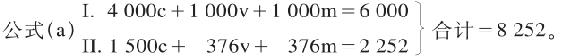
首先要指出，年社会产品的总额8 252，小于第一个公式的总额9 000。我们尽可以假定一个大得多的总额，比如说，一个增大10倍的总额。但这里选择一个小于第一个公式的总额，正是为了要清楚地说明，规模扩大的再生产（在这里，这种再生产只是指用较大的投资来进行的生产）与产品的绝对量无关，也正是为了要清楚地说明，对一定量商品来说，规模扩大的再生产所需要的前提只是，既定产品的各种要素已经有了不同的组合，或不同的职能规定，因此，按价值量来说，这种再生产首先只是简单再生产。所改变的，不是简单再生产的各种既定要素的量，而是它们的质的规定，并且这种改变是以后随着发生的规模扩大的再生产的物质前提。(1)
在可变资本和不变资本之间的比例不同时，我们对公式的表述可以不同，例如：
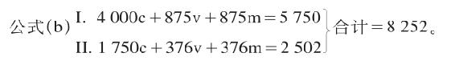
这样，这个公式似乎是为简单再生产而列出的，以至于剩余价值全都作为收入花掉，而没有积累起来。在（a）和（b）这两个场合，年产品的价值量是相同的，只是在（b）的场合，它的各种要素在职能上的组合使再生产按照相同的规模再开始，而在（a）的场合，年产品各要素在职能上的组合却形成规模扩大的再生产的物质基础。在（b）的场合，（875v＋875m）I＝1 750I（v＋m），它和1 750IIc交换时，没有余额，而在（a）的场合，（1 000v＋1 000m）I＝2 000I（v＋m），它和1 500IIc交换时，却留下一个余额500Im，供第I部类进行积累。
现在让我们更仔细地分析公式（a）。假定第I部类和第II部类都把剩余价值的一半积累起来，即把它转化为追加资本的要素，而不是作为收入花掉。因为1 000Im的一半＝500要以这种或那种形式积累起来，作为追加的货币资本投入，也就是说，要转化为追加的生产资本，所以，只有（1 000v＋500m）I作为收入花掉。因此，IIc的正常的量在这里也只有1 500。对1 500（Iv＋m）和1 500IIc之间的交换，无须再研究，因为它作为简单再生产的过程已经阐明了；对4 000Ic，也无须再考察，因为4 000Ic为重新开始的再生产（这一次要按扩大的规模进行）而进行的再组合，同样也作为简单再生产的过程阐明了。
在这里唯一要研究的，是500Im和（376v＋376m）II。一方面要考察第I部类和第II部类各自的内部关系，另一方面要考察两个部类之间的运动。因为我们假定第II部类的剩余价值也有一半要积累，所以在这里应该有188转化为资本，其中有1/4＝47要转化为可变资本，以整数计，可以说有48要转化为可变资本；而剩下140要转化为不变资本。
我们在这里碰上了一个新问题，这个问题的存在本身，对通常的见解来说，必然显得奇怪，因为按照通常的见解，一种商品总是要和另一种商品交换，或者说，商品总是要和货币交换，而这个货币又总是要和另一种商品交换。140IIm所以能够转化为生产资本，只是因为它们由商品Im中具有同等价值额的部分来补偿。不言而喻，Im中要同IIm交换的部分，必须由生产资料构成，这种生产资料或者既能进入第I部类的生产，也能进入第II部类的生产，或者只能进入第II部类的生产。这种补偿之所以能够进行，只是由于第II部类方面的单方面的买，因为全部有待我们考察的剩余产品500Im，都要用在第I部类的积累上，因此，不能用来同第II部类的商品交换；换句话说，第I部类的这些剩余产品不能同时既用来积累，又用来消费。因此，第II部类必须用现金购买140Im，但是这样用掉的货币，不会因为以后第II部类把它的商品卖给第I部类而流回到它那里。并且，在每年的新生产中，只要这种生产是规模扩大的再生产，这种过程就是不断反复发生的。对第II部类来说，为这个目的所需要的货币源泉，是从哪里来的呢？
但是，第II部类对于新货币资本的形成——这种形成伴随着实际的积累，在资本主义生产中是实际积累的条件，实际上首先表现为简单的货币贮藏——好像是一块不毛之地。
首先，我们有376IIv；这个预付在劳动力上的货币资本376，会由于第II部类的商品被人购买而不断地作为货币形式的可变资本回到第II部类的资本家手中。不过，这样不断反复离开起点又回到起点（资本家的钱袋）的现象，无论如何不会增加在这个循环里面流转的货币。因此，这不是货币积累的源泉；这个货币也不能从这个流通中取出，以便形成贮藏起来的、潜在的新的货币资本。
但是且慢!这里就没有什么利润可图吗？
我们不要忘记，和第I部类相比，第II部类具有这样一个优点：第II部类所使用的工人，必须再向第II部类购买他们自己所生产的商品。第II部类是劳动力的买者，同时又是向自己所使用的劳动力的所有者出售商品的卖者。因此，第II部类资本家能够：
1. 简单地把工资压低到它的平均正常水平以下——这是他们与第I部类资本家的共同之处。因此，作为可变资本的货币形式来执行职能的货币，就有一部分游离出来，并在同一个过程的不断反复中成为第II部类的货币贮藏的一个正常的源泉，从而形成潜在的追加货币资本的一个正常的源泉。偶然靠欺诈取得的利润，当然和我们这里考察的正常的资本形成的问题无关。但不要忘记，实际支付的正常工资（它在其他条件不变的情况下决定可变资本的量），根本不是由于资本家的好心肠才支付的，而是在既定关系下不得不支付的。因此，这种说明方法就被排除了。如果我们假定376v是第II部类所耗费的可变资本，我们就不应该为了说明一个新碰到的问题，而突然偷偷地改变我们的假设，说他们只预付350v，而不是376v。
2. 另一方面，第II部类作为总体来看，如上所述，比第I部类还有一个优点：它是劳动力的买者，同时又是再向自己的工人出售商品的卖者。每一个工业国家都提供了十分明显的实例，证明可以怎样利用这个优点，可以怎样在名义上支付正常的工资，事实上却一部分用实物工资制，一部分用伪造通货的办法（也许还不受法律的处罚），把其中的一部分在不付相应的商品等价物的情况下再夺回来，换句话说，再偷回来。例如，在英国和美国就是这样。（关于这一点，要列举若干恰当的例子来加以说明。）但是，这种做法，正好是第1点所讲的同样的做法，只不过伪装了一下，而且是迂回曲折地进行的。因此，这种做法要和前一种做法一样被排除。这里讲的，是实际上支付的而不是名义上支付的工资。
我们知道，在对资本主义机制进行客观分析时，不能利用这个机制所具有的某些特别的污点作为借口，来排除理论上的困难。但奇怪的是，攻击我的大多数资产阶级批评家竟大喊大叫，似乎我比如说在《资本论》第一册中假定资本家支付劳动力的实际价值（他们大都不是这样做的），这就冤枉了这些资本家！（在这里不妨用谢夫莱赐给我的慷慨，107来引用他的一些话。）
因此，要达到上述目的，用376IIv是不行的。
但是，用376IIm，似乎更不行。在这里，只有同一部类的资本家互相对立。他们彼此出售和彼此购买他们所生产的消费资料。这种交换所必需的货币，只是作为流通手段执行职能；在正常的进程中，这种货币必须按照各有关当事人预付到流通中的数量，流回到他们各人手里，这样才能始终不断地重新通过同一轨道。
要从流通中取出这种货币以形成潜在的追加的货币资本，看来只可能通过两种途径。或者是，第II部类的一部分资本家欺骗另一部分资本家，用这种方法夺取他们手中的货币。我们知道，新货币资本的形成，不需要先增加通货，而只需要把某些方面的货币从流通中取出，作为贮藏货币贮存起来。即使可以把货币偷来，以致第II部类的一部分资本家的追加货币资本的形成，可以和另一部分资本家的直接的货币损失结合在一起，那也不会改变事情的本质。不过第II部类中受骗的那一部分资本家会生活得差一些，如此而已。
或者是，必要生活资料所代表的IIm的一部分，直接在第II部类转化为新的可变资本。这又是怎样发生的，我们将在本章的结尾（第IV节）加以研究。
(1) 这一点永远结束了詹姆斯·穆勒和赛·贝利之间关于资本积累的争论，这个争论在第一册（第二十二章第5节第634页注（65）106）已经从另一个观点加以论述，这就是在产业资本量不变的情况下产业资本的作用有无扩大的可能。我们以后还要谈到这一点。
[106] 见《马克思恩格斯文集》第5卷第704页脚注（64）。——570。
107 阿·谢夫莱在他的著作《资本主义和社会主义》1870年蒂宾根版中说，马克
思断言资本家如实地支付劳动力的价值，是“慷慨”行为。马克思在《评阿·瓦格纳的〈政治经济学教科书〉》一文中，在旁注中谈到了这一点。——573。
1. 第一例
（A）简单再生产的公式
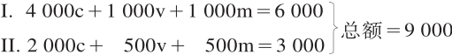
（B）规模扩大的再生产的开端公式
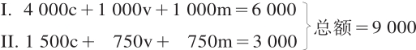
假定在公式（B）中，第I部类的剩余价值的一半即500被积累。因此，首先，（1 000v＋500m）I或1 500I（v＋m）要由1 500 IIc补偿；这样，第I部类留下的是4 000c＋500m，后者要用于积累。（1 000v＋500m）I由1 500IIc来补偿，是简单再生产的一个过程，这在考察简单再生产时已经阐明了。
我们假定，500Im中有400要转化为不变资本，100要转化为可变资本。要在第I部类内部资本化的400m的交换已经阐明了；它们能够直接并入Ic；这样，第I部类是：
4 400c＋1 000v＋100m（最后一项要转化为100v）。
第II部类方面为了积累的目的，要向第I部类购买100Im（以生产资料的形式存在），于是这100Im形成第II部类的追加不变资本；而第II部类为这个目的而支付的100货币，就转化为第I部类的追加可变资本的货币形式。这样，第I部类的资本是4 400c＋1 100v（后者以货币形式存在）＝5 500。
第II部类的不变资本现在是1 600c；第II部类要运用这个资本，就必须再投入50v的货币来购买新的劳动力，从而使他的可变资本由750增加到800。第II部类这样增加的不变资本和可变资本，共计150，要由该部类的剩余价值来偿付；因此，在750IIm中，只剩下600m作为第II部类资本家的消费基金，他们的年产品现在划分如下：
II. 1 600c＋800v＋600m（消费基金）＝3 000。
在消费资料上生产的150m，在这里已经转化为（100c＋50v）II。它将以它的实物形式，全部进入工人的消费：如上所述，100为第I部类的工人（100Iv）所消费，50为第II部类的工人（50IIv）所消费。事实上，因为第II部类的总产品要以积累所必需的形式制造出来，所以增大了100的剩余价值部分要以必要消费资料的形式再生产出来。如果再生产实际是按扩大的规模开始的，第I部类的可变货币资本100，就会通过他们的工人阶级的手，流回到第II部类；第II部类则把商品储备中的100m转给第I部类，同时又把商品储备中的50转给本部类的工人阶级。
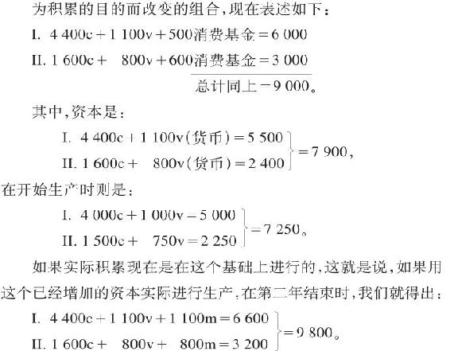
假定第I部类继续按同一比例进行积累，550m作为收入花掉，550m积累起来。这样，首先1 100Iv要由1 100 IIc补偿，其次，550 Im也要实现为同等数额的第II部类的商品，合计是1 650I（v＋m）。但是，第II部类需要补偿的不变资本只＝1 600；因此，其余的50，必须从800IIm中补充。如果我们在这里首先撇开货币不说，那么，这个交易的结果如下：
I. 4 400c＋550m（要资本化的剩余价值）；此外还有资本家和工人的消费基金1 650（v＋m），在商品IIc上实现。
II. 1 650c（如上所述，其中的50是从IIm中取出来追加的）＋800v＋750m（资本家的消费基金）。
但是，如果第II部类的v和c保持原有的比例，那么，投入50c，就还要投入25v；这又必须从750m中取出。因此，我们得出：
II. 1 650c＋825v＋725m。
第I部类的550m要资本化；如果保持以前的比例，其中440就形成不变资本，110就形成可变资本。这110势必要从725 IIm中取出，就是说，价值110的消费资料将由第I部类的工人消费，而不是由第II部类的资本家消费，因此，后者也只好把他们不能消费的110m转化为资本。因此，725IIm就只剩下615IIm。但是，第II部类把110这样转化为追加不变资本时，他们还需要有追加的可变资本55；这就必须再从他们的剩余价值中取出；从615IIm中减去这个数额，就只剩下560，供第II部类的资本家消费。所以，在完成一切现实的和可能的转移以后，现在的资本价值是：
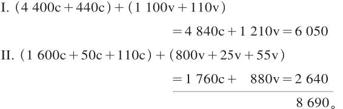
如果要使事情正常地进行，第II部类就必须比第I部类积累得快，因为如果不是这样，I（v＋m）中要与商品IIc交换的部分，就会比它唯一能与之交换的IIc增加得快。
如果再生产是在这个基础上并且在其他条件不变的情况下继续进行，下一年结束时，我们就得出：
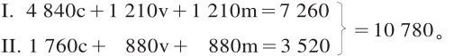
如果剩余价值划分率不变，第I部类首先就会把1 210v和剩余价值的一半＝605，合计＝1 815，作为收入花掉。这个消费基金，又比IIc大55。这55要从880m中取出，这样就剩下825。55IIm转化为IIc时，又要从IIm中扣除相应的可变资本＝27(1/2)。留下消费的是797(1/2)IIm。
第I部类中现在要资本化的是605m，其中484转化为不变资本，121转化为可变资本，后者要从IIm中扣除，IIm现在是＝797(1/2)，扣除后剩下的是676(1/2)。因此，第II部类会把121再转化为不变资本；为此，还需要有可变资本60(1/2)；这同样要从676(1/2)中扣除，剩下用于消费的只是616。
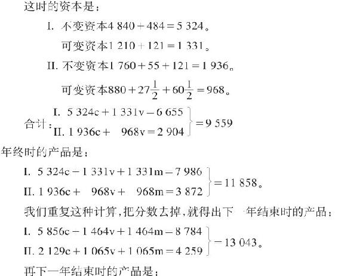

在五年规模扩大的再生产期间，第I部类和第II部类的总资本，已经由5 500c＋1 750v＝7 250，增加到8 784c＋2 782v＝11 566，也就是按100∶160之比增加了。总剩余价值原来是1 750，现在是2 782。已经消费的剩余价值，原来在第I部类是500，在第II部类是600，合计＝1 100；但是在最后一年，在第I部类是732，在第II部类是745，合计＝1 477，因此，是按100∶134之比增加了。108
108 在《资本论》第二卷第一版（1885年）和第二版（1893年）中，这段话是这样的：“在四年规模扩大的再生产期间，第I部类和第II部类的总资本，已经由5 400c＋1 750v＝7 250增加到8 784c＋2 782v＝11 566，也就是按100∶160之比增加了。总剩余价值原来是1 750，现在是2 782。已经消费的剩余价值，原来在第I部类是500，在第II部类是535，合计＝1 035；但是在最后一年，在第I部类是732，在第II部类是958，合计＝1 690。因此，是按100∶163之比增加了。”
本版对这一段进行了更正。——579。
2. 第二例
现在假定有年产品9 000，这个年产品完全是处在产业资本家阶级手中的商品资本，其中可变资本和不变资本的一般平均比例是1∶5。这种情况的前提是：资本主义生产已经有了显著的发展；与此相应，社会劳动的生产力也已经有了显著的发展；生产规模在此以前已经有了显著的扩大；最后，在工人阶级中造成相对人口过剩的所有条件也已经有了发展。这时，把分数去掉，年产品就会划分如下：
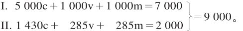
现在假定，第I部类的资本家阶级只消费剩余价值的一半＝500，而把其余一半积累起来。这样，（1 000v＋500m）I＝1 500要转化为1 500IIc。但是因为在这里IIc只＝1 430，所以要从剩余价值那里补进70。285IIm减去这个数额，还留下215IIm。于是我们得出：
I. 5 000c＋500m（待资本化的剩余价值）＋资本家和工人的消费基金1 500（v＋m）。
II. 1 430c＋70m（待资本化的剩余价值）＋285v＋215m。
因为在这里70IIm直接并入IIc，所以，为了推动这个追加的不变资本，就要有一个可变资本70/5＝14。这14也要从215IIm中扣除；剩下的是201IIm，因此我们得出：
II.（ 1 430c＋70c）＋（285v＋14v）＋201m。
1 500（Iv＋1/2m）和1 500IIc的交换，是简单再生产的过程，关于这一点已经讲过了。不过，在这里还必须指出某些特征，这些特征所以会发生，是由于在有积累的再生产中，（Iv＋1/2m）不是单单由IIc来补偿，而是由IIc加IIm的一部分来补偿。
不言而喻，既然把积累作为前提，（Iv＋m）就大于IIc，而不像简单再生产那样，和IIc相等；因为1. 第I部类已经把它的一部分剩余产品并入自己的生产资本，并把其中的5/6转化为不变资本，所以，它不能同时又用第II部类的消费资料来补偿这5/6；2. 第I部类要用它的剩余产品，为第II部类进行积累时所必需的不变资本提供材料，就像第II部类必须为第I部类的可变资本提供材料完全一样，这个可变资本应当推动第I部类的剩余产品中由第I部类自己用做追加不变资本的部分。我们知道，实际的可变资本是由劳动力构成的，因此，追加的可变资本也是由劳动力构成的。第I部类的资本家不必为了他们将要使用的追加劳动力，向第II部类购买必要生活资料，把它们储备起来，或积累这种必要生活资料，而奴隶主却不得不这样做。工人自己会和第II部类进行交易。但是，不妨说，从资本家的观点看来，追加劳动力的消费资料只是生产和维持他们势必要有的追加劳动力的手段，因而是他们的可变资本的实物形式。他们（这里指第I部类资本家）自己的直接活动，只是贮存为购买追加劳动力所必需的新的货币资本。一旦他们把这个劳动力并入他们的资本，货币对于这种劳动力来说，就成为第II部类商品的购买手段，因此必须找到劳动力的消费资料。
附带说一下，资本家先生和他们的报刊，对劳动力花费自己的货币的方式，对劳动力借以实现这种货币的第II部类商品，总是感到不满意。于是，他们来推敲哲理、谈论文化和侈谈博爱，例如，英国驻华盛顿大使馆秘书德拉蒙德先生就是这样做的。据他说，《民族》〔一种刊物〕在1879年10月底发表了一篇很有意思的文章，其中写道：
“工人在文化方面跟不上发明的进步。许多物品他们已经买得起，可是他们不知道怎样使用它们，所以他们没有为这些物品创造任何市场。〔每个资本家当然都愿意工人购买他的商品。〕没有任何理由说明，为什么工人不应该像那些赚钱同他一样多的牧师、律师和医师一样，希望得到同样多的舒适品。〔这种律师、牧师和医师确实可以按照自己的愿望得到许多舒适品！〕可是工人不这样做。问题始终在于，怎样用合理的、有益健康的方法来提高他们作为消费者的地位。这不是容易的问题，因为他的全部奢望没有超出缩短劳动时间的范围。蛊惑者总是煽动他去争取这种事情，而不诱导他借助自己智力和德性的完善来提高自己的地位。”（《女王陛下驻外使馆秘书关于驻在国的工商业等情况的报告》1879年伦敦版第404页）
延长劳动时间，好像就是使工人借助自己智力和德性的完善来提高自己的地位并成为一个合理消费者的那种合理的、有益健康的方法的秘密。为了要成为资本家商品的一个合理的消费者，工人首先——但是蛊惑者阻止他这样做！——就要让他的资本家用不合理的、有损健康的方法消费他的劳动力。不过，资本家又是怎样理解合理的消费呢？这表现在他不惜降低身价，在消费品贸易上直接和他的工人打交道，实行“实物工资制”，而且在各式各样的实物工资中还包括供给工人住房。这样一来，资本家同时又是工人的房主了。
正是这位热衷于通过种种资本主义尝试来提高工人阶级地位的心地善良的德拉蒙德，在同一个报告中还谈到洛厄尔—劳伦斯公司的模范棉纺织厂。工厂女工的供膳宿舍和宿舍，属于拥有工厂的股份公司所有；这些宿舍的女管理员是为该股份公司服务的。股份公司制定了女工管理规则，任何女工均须在晚上10点以前回宿舍。但是这个制度的精华是：公司所设的特别警察在附近巡逻，以防有人违反宿舍规则。晚上10点以后，任何女工都不准出入宿舍。任何女工都不准在股份公司所属地区以外的地方住宿。地区内的每一所房屋，每周给公司带来10美元左右的租金。现在，我们就来看一看这种合理消费者是何等幸福：
“在许多设备最好的女工宿舍里，都备有钢琴。在织机上连续劳动10小时的女工，与其说需要真正的休息，不如说需要调剂单调的生活，因此，至少在她们中间，音乐、唱歌和舞蹈起着重要的作用。”（第412页）
但是，使工人成为一个合理消费者的主要秘密，还在下面这一点。德拉蒙德先生曾经访问过特纳·福尔斯（康涅狄格河畔）的制刀工厂。股份公司的主任会计欧克曼先生告诉他，美国的餐刀制品已在质量上胜过英国制品，接着又告诉他：
“在价格上，我们也要胜过英国；现在我们已经在质量上领先了，这是公认的；但是我们必须有较低的价格；只要我们的钢的价格便宜了，我们的劳动也便宜了，我们就会有较低的价格!”（第427页）
降低工资和延长劳动时间，这就是提高工人地位，使他成为合理的消费者的那种合理的、有益健康的方法的实质，只有这样，工人才可以为一批由于文化和发明的进步而使他买得起的物品创造一个市场。
因此，就像第I部类必须用它的剩余产品为第II部类提供追加的不变资本一样，第II部类也要同样为第I部类提供追加的可变资本。就可变资本来说，当第II部类以必要消费资料的形式再生产它的总产品的更大部分，特别是它的剩余产品的更大部分时，它就既为第I部类又为它自己进行积累了。
在以资本的增加为基础的生产中，I（v＋m）必须＝IIc加上再并入资本的那部分剩余产品，加上第II部类扩大生产所必需的不变资本的追加部分；而第II部类扩大生产的最低限度，就是第I部类本身进行实际积累，即实际扩大生产所不可缺少的最低限度。
我们回过来讲刚才考察的情况，这种情况有这样一个特点：IIc小于I（v＋1/2m），即小于第I部类产品中作为收入用于消费资料的部分，因此，在和1 500 （Iv＋m）交换时，第II部类的一部分剩余产品＝70，会立即由此实现。至于1 430 IIc，在其他条件不变的情况下，它总是要由同等价值额的I（v＋m）来补偿，这样，第II部类的简单再生产才有可能进行，关于这一点，我们在这里不需要进一步考察。但是补充的70 IIm就不是这样。那种对第I部类来说仅仅是以消费资料补偿收入，仅仅是为消费而进行商品交换的事情，对第II部类来说，就不像在简单再生产中那样，仅仅是它的不变资本由商品资本形式再转化为它的实物形式，而是直接的积累过程，是它的一部分剩余产品由消费资料的形式转化为不变资本的形式。如果第I部类用70镑货币（为了剩余价值的转化而保留的货币准备金）来购买70 IIm，如果第II部类不用这个货币购买70 Im，而把这70镑作为货币资本积累起来，那么，这70镑虽然不是再进入生产的产品的表现，但总是追加产品的表现（正是第II部类的剩余产品的表现，追加产品是这个剩余产品的一部分）。但是，这样一来，第II部类方面的这种货币积累，同时就是生产资料形式的卖不出去的70 Im的表现了。因此，第I部类会发生相对的生产过剩，这是同第II部类方面的再生产不同时扩大相适应的。
但是，我们把上面这点撇开不说。在从第I部类出来的货币70，还没有通过第II部类方面购买70 Im，而回到或者只是部分地回到第I部类的期间，货币70会在第II部类全部地或者部分地充当追加的潜在货币资本。在第I部类和第II部类之间商品的互相补偿使货币再流回到它的起点以前，这对双方的任何交换来说，都是适用的。但是，在事情正常进行的情况下，货币在这里所起的这种作用只是暂时的。在一切暂时游离的追加货币都立即能动地作为追加货币资本执行职能的信用制度下，这种仅仅暂时游离的货币资本可以被束缚起来，例如，可以用在第I部类的新的企业上，而它本来应该实现停滞在第I部类的其他企业中的追加产品。其次，应该指出：70 Im并入第II部类的不变资本，同时要求第II部类的可变资本增加14。这种增加——像第I部类剩余产品Im直接并入资本Ic一样——是以第II部类的再生产已经具有进一步资本化的趋势为前提的， 也就是说，是以第II部类再生产包含着由必要生活资料构成的那部分剩余产品的增加为前提的。
我们说过，在第二例中，如果500 Im要资本化，9 000产品为了再生产的目的，必须按照下面的方法来划分。我们在这里只考察商品，而把货币流通撇开不管。
I. 5 000c＋500m（待资本化的剩余价值）＋1 500（v＋m）消费基金＝7 000商品。
II. 1 500c＋299v＋201m＝2 000商品。总额为9 000商品产品。资本化的过程如下：
第I部类中要资本化的500m，分成5/6＝417c＋1/6＝83v。这个83v会从IIm中取出一个同等数额，用来购买不变资本的要素，并且加到IIc中去。IIc增加83，就要求IIv也增加83的1/5＝17。因此，在交换之后我们得出：
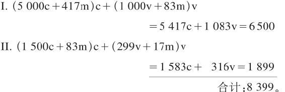
第I部类的资本已经由6 000增加到6 500，即增加1/12。第II部类的资本已经由1 715增加到1 899，即增加近1/9。
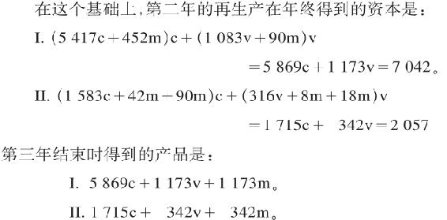
如果第I部类和以前一样，把剩余价值的一半积累起来，那么，（Iv＋1/2m）＝1 173v＋587（1/2m）＝1 760，大于1 715 IIc的总数，多了45。因此，这个差额必须通过同额的生产资料转给IIc来抵消。这样，IIc就会增加45，从而也要求IIv增加1/5＝9。其次，资本化的587 Im，也是分为5/6和1/6，即分为489c和98v；这98要求第II部类的不变资本再增加98，这又要求第II部类的可变资本再增加1/5＝20。因此，我们得出：
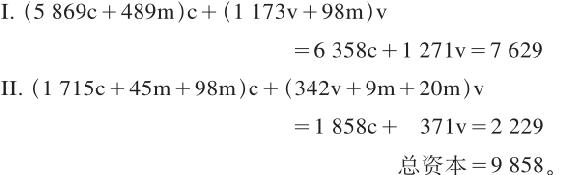
因此，三年的扩大再生产，使第I部类的总资本由6 000增加到7 629，第II部类的总资本由1 715增加到2 229，社会的总资本则由7 715增加到9 858。
3. 积累时IIc的交换
可见，在（Iv＋m）和IIc的交换上有不同的情况。
在简单再生产时，二者必须相等，必须互相补偿；因为如果不是这样，正像前面说过的，简单再生产就不可能不受到干扰。
在积累时，首先要考察的是积累率。在以上各个场合，我们都假定第I部类的积累率＝1/2mI，并且每年保持不变。我们只是假定这个积累资本分成可变资本和不变资本的比例会发生变化。这里有三种情形：
1. （Iv＋1/2m）＝IIc。因此，IIc小于（Iv＋m）。必须总是这样，否则第I部类就无法积累了。
2. （Iv＋1/2m）大于IIc。在这个场合，要完成这一补偿，就要把IIm的一个相应部分加进IIc，使IIc的总额＝I（v＋1/2m）。这里的交换，对第II部类来说，不是它的不变资本的简单再生产，而已经是积累，即它的不变资本已经增加了用以交换第I部类的生产资料的那部分剩余产品。这种增加同时包括第II部类还从它本身的剩余产品中取出一部分相应地增加它的可变资本。
3. （Iv＋1/2m）小于IIc。在这个场合，第II部类没有通过这种交换而全部再生产它的不变资本，所以必须通过向第I部类购买，才能补偿这种不足。但是，这种情况并不需要第II部类可变资本的进一步积累，因为它的不变资本只是通过这种购买在原有数量上全部再生产出来。另一方面，第I部类中仅仅积累追加货币资本的那一部分资本家，却已经通过这种交换完成了这种积累的一部分。
简单再生产的前提是I（v＋m）＝IIc。这个前提同资本主义生产是不相容的，虽然这并不排斥在10—11年的产业周期中某一年的生产总额往往小于前一年的生产总额，以致和前一年比较，连简单再生产也没有。不仅如此，在人口每年自然增殖的情况下，只有在人数相应地增加的不从事生产的仆役参与代表全部剩余价值的1 500的消费时，简单再生产才会发生。而在这种情况下，就不可能有资本的积累，即实际的资本主义生产。因此，资本主义积累的事实排斥了IIc＝I（v＋m）这一可能性。不过，甚至在资本主义积累中，仍然可能发生这样的情况：由于过去的一系列生产期间进行积累的结果，IIc不仅与I（v＋m）相等，而且甚至大于I（v＋m）。这就是说，第II部类的生产过剩了，而这只有通过一次大崩溃才能恢复平衡，其结果是资本由第II部类转移到第I部类。——如果第II部类自己再生产一部分不变资本，例如在农业中使用自己生产的种子，那也不会改变I（v＋m）和IIc的关系。在第I部类和第II部类之间的交换中，IIc的这个部分和Ic一样，无须加以考察。如果第II部类的产品有一部分可以作为生产资料进入第I部类，那也不会改变问题的实质。这部分产品就会和第I部类提供的一部分生产资料互相抵消，如果我们愿意对社会生产的两大部类（生产资料的生产者和消费资料的生产者）之间的交换进行纯粹的、不受干扰的考察，那么应该从一开始就把这个部分从双方都扣除。
因此，在资本主义生产中，（Iv＋m）不能与IIc相等；或者说，二者不能在交换时互相抵消。如果I(m/x)是Im中第I部类资本家作为收入花掉的部分，那么，I（v＋m/x）就可以等于、大于或小于IIc；但是，I（v＋m/x）必须总是小于II（c＋m），其差额就是第II部类的资本家阶级在IIm中无论如何必须由自己消费的部分。
应该指出，在关于积累的这个阐述中，就不变资本是在它参与下生产的商品资本的一部分价值来说，不变资本的价值没有得到精确的说明。新积累的不变资本的固定部分，只是逐渐地、周期地、按照这些固定要素的不同性质而以不同的程度加入商品资本的；因此，在原料和半成品等等大量进入商品生产时，商品资本的较大的部分是由流动的不变组成部分和可变资本这二者的补偿构成的。（鉴于流动组成部分的周转，像以上这样阐述是可以的；因此，可以假定，在一年之内，流动部分以及由固定资本转给它的那部分价值周转十分频繁，以致所提供的商品的总额，在价值上和进入年生产的总资本相等。）但是当用机器进行生产时，在只用辅助材料而不用原料的地方，劳动要素v就必然会作为商品资本的较大的组成部分再现。在计算利润率时，剩余价值是按总资本计算的，与固定组成部分周期地转移到产品中去的价值的多少无关。但是，对周期地生产的每个商品资本的价值来说，只是按照不变资本的固定部分由于消耗而把价值平均转移到产品本身中去的程度，把不变资本的固定部分计算在内。
IV. 补充说明
对第II部类来说，原始的货币源泉是第I部类金生产者用来和IIc的一部分进行交换的v＋m。只有在金生产者积累剩余价值或把它转化为第I部类的生产资料，从而扩大他的生产时，他的v＋m才不会进入第II部类。另一方面，只有金生产者自己这方面的货币积累最终导致扩大再生产，金生产中不是用做收入而是用做金生产者的追加可变资本的那部分剩余价值，才进入第II部类，在那里形成新的贮藏货币，或提供新的手段，使它能向第I部类购买，而不需要直接再向第I部类出售。从来源于金生产的I（v＋m）的货币中，要扣除一部分金，用做第II部类的某些生产部门所需要的原料等等，总之，用做它们的不变资本的补偿要素。为了将来扩大再生产，在第I部类和第II部类之间的交换中，会在以下场合出现暂时形成的货币贮藏的要素：对第I部类来说，只是在这种场合，即Im的一部分单方面地、没有相应的购买而卖给第II部类，并且在那里作为第II部类的追加不变资本发挥作用；对第II部类来说，是在这种场合，即当第I部类方面为了取得追加的可变资本时，第II部类做了第I部类所做的上述同样的事情；其次，是在这种场合，即第I部类作为收入花掉的那部分剩余价值没有和IIc互相抵消，以致IIm有一部分被人买去，转化为货币。如果I（v＋m/x）大于IIc，IIc为了它的简单再生产，就不需要再用第I部类的商品，来补偿IIm中已经被第I部类消费的部分。问题在于，在第II部类各个资本家之间的交换中——这种交换只能是IIm的互相交换——，在多大程度上能够形成货币贮藏？我们知道，第II部类内部之所以有直接的积累，是由于IIm的一部分直接转化为可变资本（正如第I部类内部之所以有直接的积累，是由于Im的一部分直接转化为不变资本）。只要指出，第II部类的不同生产部门内部的积累，以及每个单个生产部门中的每个单个资本家的积累，都是处于不同的阶段，这个问题就已经可以得到说明了，如果作相应的变动，这也完全适用于第I部类。一方面还处在货币贮藏、只卖不买的阶段，另一方面却已经处在实际扩大再生产、只买不卖的阶段。诚然，追加的可变货币资本首先是投在追加的劳动力上；但是这种劳动力向那些从事货币贮藏，持有追加的、供工人消费的消费资料的人购买生活资料。同这些人的货币贮藏相适应，货币不会从他们手里回到它的起点，他们会把货币积累起来。
人名索引
A
阿里瓦本伯爵，乔万尼（让）（Arrivabene, Giovanni[Jean], conte 1787—1881）——意大利经济学家和翻译家；1847年布鲁塞尔经济会议的发起人；曾把一些经济学著作译成法文。——489。
埃德蒙兹，托马斯·娄（Edmonds, Thomas Rowe 1803—1889）——英国经济学家，空想社会主义者；他利用李嘉图的理论得出社会主义的结论。——18。
B
巴顿，约翰（Barton, John 1789—1852）——英国经济学家，资产阶级古典政治经济学的代表人物。——252、254、434。
贝克韦尔，罗伯特（Bakewell, Robert 1725—1795）——英国农学家、畜牧家和育种家。——264。
贝利，赛米尔（Bailey, Samuel 1791—1870）——英国资产阶级经济学家和哲学家；从庸俗经济学的立场反对李嘉图的劳动价值论，同时也正确地指出了李嘉图经济学观点中的一些矛盾。——123、570。
贝色麦，亨利（Bessemer, Henry 1813—1898）——英国工程师和化学家；曾发明较节约的炼钢方法。——267。
波特尔，阿朗索（Potter, Alonzo 1800—1865）——美国哲学家和经济学家，1815年起为宾夕法尼亚的主教；曾在一些院校教授神学。——207、208。
伯恩施坦，爱德华（Bernstein, Eduard 1850—1932）——德国银行雇员和政论家，1872年起为德国社会民主工党党员，哥达合并代表大会代表（1875），卡·赫希柏格的秘书（1878），1880年结识马克思和恩格斯，在他们的影响下成为科学社会主义的拥护者；《社会民主党人报》编辑（1881—1890）。——10。
C
采勒（Zeller, J.）——德国经济学家。——10。
查默斯，托马斯（Chalmers, Thomas 1780—1847）——苏格兰神学家和资产阶级经济学家，马尔萨斯的追随者。——173。
楚普罗夫，亚历山大·伊万诺维奇（Toklj_，>gbfm]ial F_]ij_es 1842—1908）——俄国资产阶级经济学家和统计学家，铁路运输经济专家；自由主义社会活动家和政论家。——65。
D
达兰贝尔（达朗贝尔），让·巴蒂斯特·勒龙德（D’Alembert, Jean-Baptiste Le Rond 1717—1783）——法国哲学家和数学家，18世纪资产阶级启蒙运动的代表人物之一。——91。
德尔，路易·弗朗索瓦·欧仁（Daire, Louis-François-Eugène 1798—1847）——法国著作家和资产阶级经济学家，政治经济学著作的出版者。——148、212、378、400。
德拉蒙德，维克多·阿瑟·威灵顿（Drummond, Victor Arthur Wellington 1833—1907）——英国外交家。——581、582。
德斯杜特·德·特拉西伯爵，安东·路易·克劳德（Destutt de Tracy, Antoine-Louis-Claude, comte de 1754—1836）——法国经济学家、感觉论哲学家和政治家；哲学上观念学派的创始人；立宪君主制的拥护者。——496、539—549。
杜邦·德奈穆尔，皮埃尔·赛米尔（Dupont de Nemours, Pierre-Samuel 1739—1817）——法国政治活动家和经济学家，重农学派，魁奈的弟子。——212。
杜尔哥，安娜·罗伯尔·雅克，洛恩男爵（Turgot, Anne-Robert-Jacques, baron de l’Aulne 1727—1781）——法国国务活动家、经济学家和哲学家；重农学派的代表，魁奈的学生；财政总监（1774—1776）。——212、378、400。
F
富拉顿，约翰（Fullarton, John 1780—1849）——英国经济学家，货币数量论的反对者；写有一些关于货币流通和信贷问题的著作。——560。
G
古德，威廉·瓦尔特（Good, William Walter 19世纪）——英国农学家和经济学家，自由贸易的反对者，写有一些农业经济方面的著作。——262。
古奇，丹尼尔（Gooch, Daniel 1816—1889）——英国工程师和发明家，1866年起任大西铁路公司董事长；议会议员。——199。
H
霍尔兹沃思，威廉·安德鲁斯（Holdsworth, William Andrews 死于1891年以后）——英国律师。——193、197。
霍吉斯金，托马斯（Hodgskin, Thomas 1787—1869）——英国经济学家和政论家，空想社会主义者；他以李嘉图的理论为依据，批判资本主义，维护无产阶级的利益。——18、19、270。
J
基尔霍夫，弗里德里希（Kirchhof, Friedrich 19世纪）——德国资产阶级经济学家。——199、268、272—275、283。
K
凯里，亨利·查理（Carey, Henry Charles 1793—1879）——美国资产阶级庸俗经济学家，阶级调和论的创始人。——394。
考茨基，卡尔（Kautsky Karl 1854—1938）——德国历史学家和政论家，社会民主党人，《新时代》杂志编辑。——10。
柯贝特，托马斯（Corbet, Thomas 19世纪）——英国资产阶级经济学家，李嘉图的追随者。——156。
科扎克，泰奥菲尔（Kozak, Theophil）——德国出版商，约·卡·洛贝尔图斯—亚格措夫遗稿的出版者。——10。
库尔塞尔—塞讷伊，让·古斯塔夫（Courcelle-Seneuil, Jean-Gustave 1813—1892）——法国经济学家，商人；写有一些关于工业企业经济、信贷和银行问题的著作。——267。
魁奈，弗朗索瓦（Quesnay, François 1694—1774）——法国经济学家，重农学派的创始人；职业是医生。——115、148、211、212、222、378、398—400、410。
L
拉德纳，迪奥尼修斯（Lardner, Dionysius 1793—1859）——英国学者，著有大量自然科学、哲学和政治经济学方面的通俗读物。——190、191、199—201。
拉夫莱男爵，埃米尔·路易·维克多（Laveleye, Émile-Louis-Victor, baron de 1822—1892）——比利时历史学家和经济学家，庸俗政治经济学的代表人物。——271。
拉姆赛，乔治（Ramsay, George 1800—1871）——英国经济学家，资产阶级古典政治经济学的后期代表人物之一。——178、254、432—434、483、487。
拉萨尔，斐迪南（Lassalle, Ferdinand 1825—1864）——德国工人运动中的机会主义代表，1848—1849年革命的参加者，此后同马克思和恩格斯结识；全德工人联合会创始人之一和主席（1863）；写有古典古代哲学史和法学史方面的著作。——12。
拉瓦锡，安东·洛朗·德（Lavoisier, Antoine-Laurent de 1743—1794）——法国物理学家和化学家，从理论上解释了氧气的发现，推翻了关于燃素存在的假说，同时也从事政治经济学和统计学的研究；1794年被处死。——21、23。
拉韦涅，路易·加布里埃尔·莱昂斯·吉洛·德（Lavergne, Louis-Gabriel-Léonce-Guilhaud de 1809—1880）——法国资产阶级经济学家和政治活动家，保皇党人，写有农业经济方面的著作。——264。
莱勒，约翰（Lalor, John 1814—1856）——英国资产阶级政论家和经济学家。——157、160、161。
莱文斯顿，皮尔西（Ravenstone, Piercy 死于1830年）——英国经济学家，李嘉图主义者，维护无产阶级利益，反对马尔萨斯主义。——19。
兰盖，西蒙·尼古拉·昂利（Linguet, Simon-Nicolas-Henri 1736—1794）——法国律师、政论家、历史学家和经济学家；反对重农学派，对资产阶级自由和资本主义私有制、法律作了批判。——399。
劳，卡尔·亨利希（Rau, Karl Heinrich 1792—1870）——德国资产阶级经济学家，在个别问题上赞同亚·斯密和大·李嘉图的观点。——11。
勒特罗纳，吉约姆·弗朗索瓦（Le Trosne, Guillaume-François 1728—1780）——法国资产阶级经济学家，重农主义者。——212。
李嘉图，大卫（Ricardo, David 1772—1823）——英国经济学家，资产阶级古典政治经济学最著名的代表人物。——15—19、22、24、168、240、242、243、245、 248—250、252、253—254、330、432、539。
李斯特，弗里德里希（List, Friedrich 1789—1846）——德国资产阶级庸俗经济学家，保护关税政策的维护者。——11。
罗斯科，亨利·恩菲尔德（Roscoe, Henry Enfield 1833—1915）——英国化学家，写有化学教科书。——20。
罗素伯爵，约翰（Russell, John, Earl of 1792—1878）——英国国务活动家，辉格党领袖，议会议员，曾任内务大臣（1835—1839），殖民大臣（1839—1842），首相
（1846—1852和1865—1866），外交大臣（1852—1853和1859—1865），枢密院院长（1854—1855）；1855年作为英国代表参加维也纳会议。——16。
罗雪尔，威廉·格奥尔格·弗里德里希（Roscher, Wilhelm Georg Friedrich 1817—1894）——德国庸俗经济学家，莱比锡大学教授，政治经济学中的历史学派的创始人。——413。
洛贝尔图斯—亚格措夫，约翰·卡尔（Rodbertus-Jagetzow, Johann Karl 1805—1875）——德国庸俗经济学家和政治活动家，资产阶级化的普鲁士容克的思想家，普鲁士容克的“国家社会主义”理论家。——10—13、15—19、22—25、457。
M
马布利，加布里埃尔（Mably, Gabriel 1709—1785）——法国历史学家和政治活动家，启蒙思想家；空想平均共产主义的代表人物。——399。
马尔萨斯，托马斯·罗伯特（Malthus, Thomas Robert 1766—1834）——英国经济学家，教士，人口论的主要代表。——491。
马克思，燕妮（Marx, Jenny 父姓冯·威斯特华伦 von Westphalen 1814—1881）——马克思的妻子、朋友和助手。——25。
马克思—艾威林，爱琳娜（杜西）（Marx-Aveling, Eleanor[Tussy]1855—1898）——英国工人运动和国际工人运动的活动家、政论家、社会民主联盟成员，社会主义同盟创始人之一（1884）；曾在恩格斯直接领导下工作，积极参加非熟练工人群众运动的组织工作，1889年伦敦码头工人罢工的组织者之一；1889、1891 和1893年国际社会主义工人代表大会代表；马克思的小女儿，爱·艾威林的妻子（1884年起）。——9、11。
迈耶尔，鲁道夫·海尔曼（Meyer, Rudolph Hermann 1839—1899）——德国资产阶级经济学家和政论家，保守党人；《第四等级的解放斗争》、《德国政界的滥设企业者和营私舞弊》等书的作者。——10、11、19。
麦克库洛赫，约翰·拉姆赛（McCulloch, John Ramsay 1789—1864）——英国资产阶级经济学家和统计学家，李嘉图的经济学说的庸俗化者。——17、274、432—433。
麦克劳德，亨利·邓宁（Macleod, Henry Dunning 1821—1902）——英国法学家和庸俗经济学家；主要从事信贷理论研究，阐发了所谓信贷创造资本的理论。——254。
弥勒，亚当·亨利希，尼特多夫骑士（Müller, Adam Heinrich, Ritter von Nitterdorf 1779—1829）——德国政论家和经济学家；德国政治经济学中反映封建贵族利益的浪漫学派的代表人物，亚·斯密的经济学说的反对者。——207。
穆勒，约翰·斯图亚特（Mill, John Stuart 1806—1873）——英国资产阶级经济学家和实证论哲学家，政治经济学古典学派的模仿者；詹·穆勒的儿子。——254、434。
穆勒，詹姆斯（Mill, James 1773—1836）——英国资产阶级经济学家、历史学家和哲学家，李嘉图理论的庸俗化者；在哲学方面是边沁的追随者；《英属印度史》一书的作者。——274、570。
N
纽曼，赛米尔·菲力浦斯（Newman, Samuel Philips 1797—1842）——美国哲学家、语文学家和经济学家。——173。
O
欧克曼（Oakman）——美国特纳斯福尔斯（马萨诸塞州）的约翰·罗素刀具厂的主任会计。——582。
欧文，罗伯特（Owen, Robert 1771—1858）——英国空想社会主义者。——18。
P
帕特森，罗伯特·霍加德（Patterson, Robert Hogard 1821—1886）——英国政论家和资产阶级庸俗经济学家。——254。
蒲鲁东，皮埃尔·约瑟夫（Proudhon, Pierre-Joseph 1809—1865）——法国政论家、经济学家和社会学家，小资产阶级思想家，无政府主义理论的创始人，第二共和国时期是制宪议会议员（1848）。——10、18、433、483。
普利斯特列，约瑟夫（Priestley, Joseph 1733—1804）——英国化学家和唯物主义哲学家，英国资产阶级激进派的思想家，1774年发现氧气；1794年因拥护法国大革命而流亡美国。——20、21、23。
S
萨伊，让·巴蒂斯特（Say, Jean-Baptiste 1767—1832）——法国资产阶级经济学家，庸俗政治经济学的代表人物，最先系统地阐述辩护性的“生产三要素”论。——168、433、434、491。
舍尔比利埃，安东·埃利泽（Cherbuliez, Antoine-Élisée 1797—1869）——瑞士经济学家，西斯蒙第的追随者，他把西斯蒙第的理论和李嘉图理论的某些原理结合在一起。——434。
舍勒，卡尔·威廉（Scheele, Karl Wilhelm 1742—1786）——瑞典无机化学家，药剂师。——20、21。
施泰因，洛伦茨·冯（Stein, Lorenz von 1815—1890）——德国法学家、国家法专家、历史学家和庸俗经济学家，普鲁士政府的密探，《现代法国的社会主义和共产主义》一书的作者。——181。
施托尔希，安德烈·卡尔洛维奇（U njlq，>ialb⁄ G]lgj_es 原名亨利希·弗里德里希·冯·施托尔希 Heinrich Friedrich von Storch 1766—1835）——俄国经济学家、目录学家、统计学家和历史学家，德国人；彼得堡科学院院士，资产阶级古典政治经济学的模仿者。——167、433、483—484。
斯克罗普，乔治·朱利叶斯·波利特（Scrope, George Julius Poulett 1797—1876）——英国经济学家和地质学家；马尔萨斯主义的反对者；议会议员。——208、210。
斯密，亚当（Smith, Adam 1723—1790）——英国经济学家，资产阶级古典政治经济学最著名的代表人物。——7、9、13—16、17、19、157、158、187、211—242、244、245、253、382、399—427、431—434、454—455、475、484、487、533—535、548、556。
斯特罗克，阿奇博尔德（Sturrock, Archibald）——英国大北铁路公司机务处主任。——200。
斯图亚特，詹姆斯（Steuart, James 1712—1780）——英国资产阶级经济学家，重商主义的最后代表人物之一，货币数量论的反对者。——13。
T
泰勒，爱德华·伯内特（Tylor, Edward Burnett 1832—1917）——英国人类学家和民族学家，人类学和民族学中进化论的创始人。——489。
汤普森，威廉（Thompson, William 1775—1833）——爱尔兰经济学家，空想社会主义者，欧文的信徒。——18、357、359。
图克，托马斯（Tooke, Thomas 1774—1858）——英国资产阶级经济学家，资产阶级古典政治经济学的代表人物，货币数量论的批评者；写有多卷本的《价格史》。——86、129、364、366、531、534、535、537。
W
瓦格纳，阿道夫（Wagner, Adolph 1835—1917）——德国资产阶级庸俗经济学家，讲坛社会主义者，反犹太主义的基督教社会党的创始人（1878），政治经济学中所谓的社会法学派的代表。——19。
威兰德，弗兰西斯（Wayland, Francis 1796—1865）——美国神学家、伦理学家和经济学家；曾任普罗维登斯大学校长；著有伦理学、政治经济学和其他通俗教科书。——251。
威廉斯，理查·普赖斯（Williams, Richard Price）——英国工程师，铁路运输经济专家。——190、201。
X
西尼耳，纳索·威廉（Senior, Nassau William 1790—1864）——英国资产阶级庸俗经济学家，反对缩短工作日。——489。
西斯蒙第，让·沙尔·莱奥纳尔·西蒙德·德（Sismondi, Jean-Charles-Léonard Simonde de 1773—1842）——瑞士经济学家和历史学家，政治经济学中浪漫学派的代表人物。——23、128、157、434、491。
肖莱马，卡尔（Schorlemmer, Carl 1834—1892）——德国化学家，有机化学的创始人，辩证唯物主义者，曼彻斯特大学教授（1859年起）；德国社会民主党党员，国际会员，60年代初成为马克思和恩格斯的朋友。——20。
谢夫莱，阿尔伯特·埃伯哈德·弗里德里希（Schäffle, Albert Eberhard Friedrich 1831—1903）——德国资产阶级庸俗经济学家和社会学家，针对马克思《资本论》第一卷的出版，主张放弃阶级斗争，并鼓吹资产者和无产者的合作。——10、573。
Y
亚当斯，威廉·布里奇斯（Adams, William Bridges 1797—1872）——英国工程师，写有一些关于铁路建筑的著作。——190、192。
Z
泽特贝尔，格奥尔格·阿道夫（Soetbeer, Georg Adolf 1814—1892）——德国经济学家和统计学家。——527。
文献索引
卡·马克思的著作
《雇佣劳动与资本》，载于1849年4月5、6、7、8和11日《新莱茵报》（科隆）第264、265、266、267和269号（Lohnarbeit und Kapital. In: Neue Rheinische Zeitung. Köln. Nr. 264, 5. April 1849; Nr. 265, 6. April 1849; Nr. 266, 7. April 1849; Nr. 267, 8. April 1849; Nr. 269, 11. April 1849）。——12。
《哲学的贫困。答蒲鲁东先生的〈贫困的哲学〉》1847年巴黎—布鲁塞尔版（Misère de la philosophie. Réponse à la philosophie de la misère de M. Proudhon. Paris, Bruxelles 1847）。——12、18、19、23。
《哲学的贫困。答蒲鲁东先生的〈贫困的哲学〉》1885年斯图加特版（Das Elend der Philosophie. Antwort auf Proudhons Philosophie des Elends. Stuttgart 1885）。——10。
《政治经济学批判。第一分册》1859年柏林版（Zur Kritik der politischen Oekonomie. H. 1. Berlin 1859）。——4、382。
《资本论。政治经济学批判》第1卷《资本的生产过程》1872年汉堡修订第2版（Das Kapital. Kritik der politischen Oekonomie. B. 1. Buch 1: Der Produktionsprocess des Kapitals. 2. verb. Aufl. Hamburg 1872）。——4、7、9、16、19、32、36、40、44、48、60、63、79、92、116、129、140、143、151、159、172、176、180、183、185、193、194、202、209、225、227、231、239、241、252、266、331、340、342、355、360、366、378、379、391、393、395、440、460、489、539、550、564、570、573。
其他作者的著作
B
巴顿，约·《论影响社会上劳动阶级状况的环境》1817年伦敦版（Barton, J.: Observations on the circumstances which influence the condition of the labouring classes of society. London 1817）。——252。
贝利，赛·《对价值的本质、尺度和原因的批判研究，主要是论李嘉图先生及其信徒的著作》，《略论意见的形成和发表》一书的作者著，1825年伦敦版（Bailey, S.: A critical dissertation on the nature, measures, and causes of value; chiefly in reference to the writings of Mr. Ricardo and his followers. By the author of essays on the formation and publication of opinions. London 1825）。——123。
波特尔，阿·《政治经济学：它的对象、应用和原理。以美国人的生活状况来加以说明》1841年纽约版（Potter, A.: Political economy: its objects, uses, and principles: considered with reference to the condition of the American people. New York 1841）。——207、208。
C
查默斯，托·《论政治经济学同社会的道德状况和道德远景的关系》1832年格拉斯哥第2版（Chalmers, Th.: On political economy in connection with the moral state and moral prospects of society. 2. ed. Glasgow 1832）。——173。
楚普罗夫，亚·《铁路业务》第1卷《它的经济特点及它和国家利益的关系》1875年莫斯科版（Toklj_， >.: D bgbdijajljcijb qjd{⁄mn_j. Ojh 1: C‘j yfjijhesbmfeb jmj^biijmne e b‘j jnijtbie{ f einblbm]h mnl]iw. I jmf_] 1875）。——65。
D
德斯杜特·德·特拉西，安·路·克·《意识形态原理》第4、5部分《论意志及其作用》1826年巴黎版（Destutt de Tracy, A. -L.-C.: Élémens d’idéologie. Pt. 4. 5: Traité de la volonté et de ses effets. Paris 1826）。——540—549。
迪尔克，查·温·《根据政治经济学原理得出的国民困难的原因及其解决办法。给约翰·罗素勋爵的一封信》1821年伦敦版（Dilke, Ch.W.: The source and remedy of the national difficulties, deduced from principles of political economy, in a letter to Lord John Russell. London 1821）。——16、17。
杜邦·德奈穆尔，皮·赛·《魁奈医生的学说，或他的社会经济学原理概述》，载于《重农学派》，附欧·德尔的绪论和评注，1846年巴黎版第1部（Dupont de Nemours, P. -S.: Maximes du Docteur Quesnay, ou résumé de ses principes d’économie sociale. In: Physiocrates. Quesnay, Dupont de Nemours, Mercier de la Rivière, L’Abbé Baudeau, Le Trosne, avec une introd. sur la doctrine des physiocrates, des comm. et des notices historiques, par E. Daire. Pt. 1. Paris 1846）。——212。
杜尔哥，安·罗·雅·《关于财富的形成和分配的考察》，载于《杜尔哥全集》，欧·德尔新编，1844年巴黎版第1卷（Turgot, A. R. J.: Réflexions sur la formation et la distribution des richesses. In: Œuvres. Nouv. éd. par E. Daire. T. 1. Paris 1844）。——212、378、400。
G
古德，威·瓦·《政治、农业和商业上的各种谬论，或20年“自由贸易”后国家的前途》1866年伦敦版（Good, W. W.: Political, agricultural and commercial fallacies; or, the prospect of the nation after twenty years “free-trade”. London 1866）。——262、263。
H
霍尔兹沃思，威·安·《关于地主和租户的法律。附大量的实例》1857年伦敦版（Holdsworth, W. A.: The Law of landlord and tenant, with a copious collection of useful forms. London 1857）。——193、197。
霍吉斯金，托·《通俗政治经济学。在伦敦技术学校的四次演讲》1827年伦敦版（Hodgskin, Th.: Popular political economy. Four lectures delivered at the London Mechanics’ Institution. London 1827）。——19、270。
J
基尔霍夫，弗·《农业经营学手册。实际农学家合理组织和管理庄园指南》1852年德绍—德累斯顿版（Kirchhof, F.: Handbuch der landwirtschaftlichen Betriebslehre. Ein Leitfaden für praktische Landwirthe zur zweckmäßigen Einrichtung und Verwaltung der Landgüter. Dessau, Dresden 1852）。——199、268、271—275、282—283。
K
柯贝特，托·《个人致富的原因和方法的研究，或贸易和投机原理的解释》（两卷集）1841年伦敦版（Corbet, Th.: An inquiry into the causes and modes of the wealth of individuals; or the principles of trade and speculation explained. In 2 Pt. London 1841）。——156。
库尔塞尔—塞讷伊，让·古·《工商企业、农业企业的理论和实践概论，或业务手册》1857年巴黎增订第2版（Courcelle-Seneuil, J. -G.: Traité théorétique et pratique des entreprises industrielles, commerciales et agricoles, ou manuel des affaires. 2. éd. rev. et augm. Paris 1857）。——267。
魁奈，弗·《关于商业和手工业者劳动的问答》，载于《重农学派》，附欧·德尔的绪论和评注，1846年巴黎版第1部（Quesnay, F.: Dialogues sur le commerce et sur les travaux des artisans. In: Physiocrates. Quesnay, Dupont de Nemours, Mercier de la Rivière, L’Abbé Baudeau, Le Trosne, avec une introd. sur la doctrine des physiocrates, des comm. et des notices historiques, par E. Daire. Pt. 1. Paris 1846）。——148、378。
魁奈，弗·《经济表》1758年凡尔赛版（Quesnay, F.: tableau économique. Versailles 1758）。——115、249、378、398、410。
魁奈，弗·《经济表分析》，载于《重农学派》，附欧·德尔的绪论和评注，1846年巴黎版第1部（Quesnay, F.: Analyse du tableau économique. In: Physiocrates. Quesnay, Dupont de Nemours, Mercier de la Rivière, L’Abbé Baudeau, Le Trosne, avec une introd. sur la doctrine des physiocrates, des comm. et des notices historiques, par E. Daire. Pt. 1. Paris 1846）。——148、212。
L
拉德纳，迪·《铁路经济：论交通运输的新形式，它的经营、前途及其与商业、财政、社会的关系》1850年伦敦版（Lardner, D.: Railway economy: a treatise on the new art of transport, its management, prospects, and relations, commercial, financial, and social. London 1850）。——190、199—201。
拉夫莱，埃·德·《论比利时农村经济》1863年巴黎—布鲁塞尔—莱比锡第2版（Laveleye, É. de: Essai sur l’économie rurale de la Belgique. 2. éd. Paris, Bruxelles, Leipzig 1863）。——271。
拉姆赛，乔·《论财富的分配》1836年爱丁堡—伦敦版（Ramsay, G.: An essay on the distribution of wealth. Edinburgh, London 1836）。——254、432、487。
拉韦涅，莱·德·《英格兰、苏格兰和爱尔兰的农村经济》，译自法文，并附署名苏格兰农场主的注释，1855年爱丁堡—伦敦版（Lavergne, L. de: The rural economy of England, Scotland, and Ireland. Transl. from the French with notes by a Scottish farmer. Edinburgh, London 1855）。——264。
莱勒，约·《货币和道德：献给时代的一本书》1852年伦敦版（Lalor, J.: Money and morals: a book for the times. London 1852）。——157。
莱文斯顿，皮·《论公债制度及其影响》1824年伦敦版（Ravenstone, P.: Thoughts on the funding system, and its effects. London 1824）。——19。
勒特罗纳，吉·弗·《就价值、流通、工业、国内外贸易论社会利益。1777年》，载于《重农学派》，附欧·德尔的绪论和评注，1846年巴黎版第2部（Le Trosne, G. -F.: De l’intérêt social par rapport à la valeur, à la circulation, à l’industrie et au commerce intérieur et extérieur. 1777. In: Physiocrates. Quesnay, Dupont de Nemours, Mercier de la Rivière, L’Abbé Baudeau, Le Trosne, avec une introd. sur la doctrine des physiocrates, des comm. et des notices historiques, par E. Daire. Pt. 2. Paris 1846）。——212。
李嘉图，大·《政治经济学和赋税原理》1821年伦敦第3版（Ricardo, D.: On the principles of political economy, and taxation. 3. ed. London 1821）。——168、240、248、252、253、432、539。
罗斯科，亨·恩·/卡·肖莱马《化学教程大全》第1卷《非金属》1877年不伦瑞克版（Roscoe, H. E./C. Schorlemmer: Ausführliches Lehrbuch der Chemie. B. 1.: Nichtmetalle. Braunschweig 1877）。——20。
罗雪尔，威·《国民经济学原理》1858年斯图加特—奥格斯堡增订第3版（罗雪尔《国民经济体系》第1卷）（Roscher, W.: Die Grundlagen der Nationalökonomie. 3. verm. und verb. Aufl. Stuttgart, Augsburg 1858. Roscher: System der Volkswirthschaft. B. 1）。——413。
洛贝尔图斯—亚格措夫，约·卡·《关于我国国家经济状况的认识》1842年新勃兰登堡—弗里德兰版（Rodbertus-Jagetzow, J. K.: Zur Erkenntniss unserer staatswirtschaftlichen Zustände. Neubrandenburg, Friedland 1842）。——10、16、24。
洛贝尔图斯—亚格措夫，约·卡·《书信和社会政治论文集》，鲁·迈耶尔编，1881年柏林版第1卷（Rodbertus-Jagetzow, J. K.: Briefe und socialpolitische Aufsätze. Hrsg. von R. Meyer. B. 1. Berlin 1881）。——10、11、12、22。
洛贝尔图斯—亚格措夫，约·卡·《给冯·基尔希曼的社会问题书简。第三封：驳李嘉图的地租学说，并论证新的租的理论》1851年柏林版（Rodbertus-Jagetzow, J. K.: Sociale Briefe an von Kirchmann. Dritter Brief: Widerlegung der Ricardo’schen Lehre von der Grundrente und Begründung einer neuen Rententheorie. Berlin 1851）。——12—13。
洛贝尔图斯—亚格措夫，约·卡·《资本。给冯·基尔希曼的社会问题书简。第四封》，泰·科扎克编并作序，1884年柏林版（Rodbertus-Jagetzow, J. K.: Das Kapital. Vierter socialer Brief an von Kirchmann. Herausgegeben und eingeleitet von Th. Kozak. Berlin 1884）。——10。
M
《马纳瓦·德哈马·萨斯特拉，或根据库卢克的解释称摩奴法典，记述印度的关税、宗教和民政制度》1863年马德拉斯第3版（Manava Dharma Sastra, or the Institutes of Manu according to the gloss of Kulluka, comprising the indian system of duties, religions and civil. 3. ed. Madras 1863）。——264。
迈耶尔，鲁·《第四等级的解放斗争》1874年柏林版（Meyer, R.: Der Emancipationskampf des vierten Standes. Berlin 1874）。——10、11。
麦克劳德，亨·邓·《政治经济学原理》1858年伦敦版（Macleod, H. D.: The elements of political economy. London 1858）。——254。
弥勒，亚·亨·《治国艺术原理》1809年柏林版第3册（Müller, A. H.: Die Elemente der Staatskunst. Oeffentliche Vorlesung vor Sr. Durchlaucht dem Prinzen Bernhard von Sachsen-Weimar und einer Versammlung von Staatsmännern und Diplomaten, im Winter von 1808 auf 1809, zu Dresden, gehalten, Th. 3. Berlin 1809）。——207。
《摩奴法典》（Gesetze des Manu）。——见《马纳瓦·德哈马·萨斯特拉，或根据库卢克的解释称摩奴法典，记述印度的关税、宗教和民政制度》。
穆勒，约·斯·《略论政治经济学的某些有待解决的问题》1844年伦敦版（Mill, J. S.: Essays on some unsettled questions of political economy. London 1844）。——254。
N
纽曼，赛·菲·《政治经济学原理》1835年安多弗—纽约版（Newman, S. Ph.: Elements of political economy. Andover, New York 1835）。——173。
P
帕特森，罗·霍·《财政学。实用教程》1868年爱丁堡—伦敦版（Patterson, R. H.: The Science of finance. A practical treatise. Edinburgh, London 1868）。——254。
S
萨伊，让·巴·《关于政治经济学各方面的问题，特别是商业普遍萧条的原因，给马尔萨斯先生的信》1820年巴黎版（Say, J. -B.: Lettres à M. Malthus, sur différens sujets d’économie politique, notamment sur les causes de la stagnation générale du commerce. Paris 1820）。——491。
萨伊，让·巴·《论政治经济学，或略论财富是怎样产生、分配和消费的》1817年巴黎第3版第2卷（Say, J. -B.: Traité d’économie politique, ou simple exposition de la manière dont se forment, se distribuent et se consomment les richesses. 3. éd. T. 2. Paris 1817）。——168、433。
施托尔希，亨·《论国民收入的性质》1824年巴黎版（Storch, H.: Considérations sur la nature du revenu national. Paris 1824）。——433、484。
施托尔希，亨·《政治经济学教程，或论决定人民幸福的原理》（六卷集）1815年圣彼得堡版第2卷（Storch, H.: Cours d’économie politique, ou exposition des principes qui déterminent la prospérité des nations. T. 1—6. T. 2. St.-Pétersbourg 1815）。——434。
斯克罗普，乔·波·《政治经济学原理》——见波特尔，阿·《政治经济学》。
斯密，亚·《国民财富的性质和原因的研究》（新四卷集），爱·吉·韦克菲尔德编，1843年伦敦版第1、2卷（Smith, A.: An inquiry into the nature and causes of the wealth of nations. Ed. by E. G. Wakefield. A new edition in 4 vols. Vol. 1. 2. London 1843）。——9、13、14、157、212—218、220、221、223—228、231—234、236、239、400—407、410—414、417、418、422、431、534。
T
泰勒，爱·伯·《人类原始历史和文明的产生的研究》，亨·弥勒译自英文，莱比锡版（Tyler [Tylor], E. B.: Forschungen über die Urgeschichte der Menschheit und die Entwicklung der Civilisation. Aus dem Englischen von H. Müller. Leipzig o. J.）。——489。
汤普森，威·托·《最能促进人类幸福的财富分配原理的研究》1850年伦敦新版（Thompson, W. Th.: An inquiry into the principles of the distribution of wealth most conducive to human happiness. A new ed. London 1850）。——18、19、357—359。
图克，托·《通货原理研究，通货与价格的关系》1844年伦敦第2版（Tooke, Th.: An inquiry into the currency principle; the connection of the currency with prices, and the expediency of a separation of issue from banking. 2. ed. London 1844）。——534—535。
W
威兰德，弗·《政治经济学原理》1843年波士顿版（Wayland, F.: The elements of political economy. Boston 1843）。——251。
威廉斯，理·普·《铁路的保养。在土木工程师协会的报告》。引自《铁路危机》，载于1867年12月21日《货币市场评论》（伦敦）第394期（Williams, R. P.: On the maintenance and the renewal of permanent way. Paper, read recently at the Institutions of Civil Engineers. Nach: The railway crisis. In: The Money Market Review. London. Nr. 394, 21 December 1867）。——190、201。
X
西尼耳，纳·威·《政治经济学基本原理》，让·阿里瓦本选自纳·威·西尼耳先生已出版和未出版的讲义，1836年巴黎版（Senior, N. W.: Principes fondamentaux de l’économie politique, tirés de leçons éd. et inéd. de Mr. N. W. Senior, par J. Arrivabene. Paris 1836）。——489。
西斯蒙第，让·沙·莱·西蒙德·德·《政治经济学概论》（两卷集）1837—1838年布鲁塞尔版第1卷（Sismondi, J. -Ch. -L. Simonde de: Études sur l’économie politique. T. 1. 2. T. 1. Bruxelles 1837—1838）。——157。
西斯蒙第，让·沙·莱·西蒙德·德·《政治经济学新原理，或论财富同人口的关系》1819年巴黎版第1卷（Sismondi, J. -Ch. -L. Simonde de: Nouveaux principes d’économie politique, ou de la richesse dans ses rapports avec la population. T. 1. Paris 1819）。——23、128—129、434。
Y
亚当斯，威·布·《公路和铁路及其有形磨损和无形磨损》1862年伦敦版（Adams, W. B.: Roads and rails and their sequences physical and moral. London 1862）。——190、192。
Z
泽特贝尔，阿·《从发现美洲到现在的贵金属的生产和金银比值》1879年哥达版（Soetbeer, A.: Edelmetall-Produktion und Werthverhältniss zwischen Gold und Silber seit der Entdeckung Amerikas bis zur Gegenwart. Gotha 1879）。——527。
议会报告和其他官方文件
D
《东印度（马德拉斯和奥里萨的饥荒）。答可尊敬的下院1867年7月4日的质询》，根据下院决定于1867年7月30日刊印，1867年伦敦版（East India. Madras and Orissa famine. Return to an address of the Honourable The House of Commons, dated 4 July 1867. Ordered, by the House of Commons, to be printed, 30 July 1867. London 1867）。——264。
《东印度（孟加拉和奥里萨的饥荒）。关于比哈尔饥荒的文件，包括弗·科克雷尔先生的报告。第三部分》，根据下院决定于1867年5月31日刊印，1867年伦敦版（East India. Bengal and Orissa famine. Papers relating to the famine in Behar, including Mr. F. Cockerell’s report. Pt. 3. Ordered, by the House of Commons, to be printed, 31 May 1867. London 1867）。——158。
《东印度（孟加拉和奥里萨的饥荒）。关于孟加拉和奥里萨饥荒的文件和通讯，包括救灾委员会的报告以及孟加拉副省长和印度总督的备忘录》，根据下院决定于1867年5月31日刊印，1867年伦敦版（East India. Bengal and Orissa famine. Papers and correspondence relative to the famine in Bengal and Orissa, including the report of the Famine Commission and the minutes of the Lieutenant Governor of Bengal and the Governor General of India. Ordered, by the House of Commons, to be printed, 31 May 1867. London 1867）。——158。
H
《皇家铁道委员会。委员们听取的证词记录。1865年3月—1866年5月》，奉女王陛下令提交议会两院，1867年伦敦版（Royal commission on railways. Minutes of evidence taken before the commissioners, March 1865 to May 1866. Presented to both Houses of Parliament by command of Her Majesty. London 1867）。——156、169、189、194、199—200、279。
N
《女王陛下驻外使馆秘书关于驻在国的工商业等情况的报告》1865年伦敦版第8号（Reports by Her Majesty’s secretaries of embassy and legation on the manufactures, commerce, &c., of the countries in which they reside. No. 8. London 1865）。——269。
《女王陛下驻外使馆秘书关于驻在国的工商业等情况的报告》1879年伦敦版第3部分（Reports by Her Majesty’s secretaries of embassy and legation on the manufactures, commerce, &c., of the countries in which they reside. P. 3. London 1879）。——529、581、582。
Y
《银行法特别委员会的报告。委员会会议记录、证词、附件和索引》，根据下院决定于1857年7月30日刊印，1857年伦敦版（Report from the select committee on bank acts; together with the proceedings of the committee, minutes of evidence, app. and index. Ordered, by the House of Commons, to be printed, 30 July 1857. Pt. 1: Report and evidence. London 1857）。——260、261。
报刊索引
H
《货币市场评论》（Money Market Review）。——190、199。
J
《经济学家。每周商业时报，银行家的报纸，铁路监控：政治文学总汇报》（The Economist. Weekly Commercial Times, Bankers’ Gazette, and Railway Monitor: a political, literary, and general newspaper）——英国的一家周刊，1843年由詹·威尔逊在伦敦创办，大工业资产阶级的喉舌。——154、280。
X
《新莱茵报。民主派机关报》（Neue Rheinische Zeitung. Organ der Demokratie）——无产阶级第一家独立的日报，1848年6月1日—1849年5月19日在科隆出版；主编是马克思，编辑是恩格斯、威·沃尔弗、斐·沃尔弗、格·维尔特、恩·德朗克、斐·弗莱里格拉特等；报纸作为无产阶级的领导核心，实际履行了共产主义者同盟中央委员会的职责；1848年9月26日科隆实行戒严，报纸暂时停刊；此后在经济和组织方面遇到了巨大困难，马克思不得不在经济上对报纸的出版负责，为此，他把自己的全部现金贡献出来，报纸终于获得了新生；1849年5月马克思和其他编辑被驱逐或遭迫害，报纸被迫停刊。——12。
Y
《一般政治学杂志》（Zeitschrift für die gesammte Staatswissenschaft）——德国的一家自由派刊物，主要刊登政治经济方面的评论，1844—1943年在蒂宾根断续地出版。——10、11。